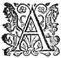
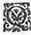
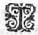
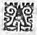
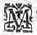

Éd.
Éd. de 1619, 165 recto sic 163 recto.

et en mesme temps les conseiller, comme il fit, de sejourner quelque temps en ceste contree, à finafin que s'il leur restoit encores quelque soupçon des choses passees, et qu'il pleust au Ciel de rompre l'enchantement de la fontaineη
, ils peussent en s'y regardant se guerir entierement de ceste maladie.
Cependant qu'en la presence d'Adamas ces choses se passoient de ceste sorte, les bergers et bergeres qui estoient dans la salle avec Leonide et Alexis, incontinent que la collation fut achevee, reprirent les divers discours qu'ils avoient laissez : Mais Alexis et Astree, pour n'estre point interrompuës, se prenant soubs les bras, se mirent à promener
d'un bout à l'autre de la salle, qui ne fut pas une petite commodité pour Alexis : car en cesses divers tours elle pouvoit plus aysémentaisément cacher les changemens de son visage, et excuser mieux les discours interrompus
qu'elle luy tenoit. Astree qui n'estoit pas moins transportee de voir devant elle un visage si ressemblant à celuy de
Celadon, ne pouvant dissimuler son contentement, fut bien ayse que ceste commodité de parler à
Alexis
luy fut donnee en se promenant, tant pour n'estre point ouye de personne qui la peust interrompre, que pour pouvoir avec plus de liberté luy representer l'affection qu'elle luy portoit. Apres avoir donc fait deux ou trois tours sans sçavoir ny l'une ny l'autre par où commencer, enfinen fin
Astree
fut la premiere à parler ainsi :
- De quelle sorte, Madame, dois-je marquer ce jour pour m'en ressouvenir à jamais, et pour
tesmoignage de l'extreme faveur que j'y ay receuë, puis qu'il m'a esté si heureux que de me faire cognoistre à vous, et de vous pouvoir asseurer de la volonté que j'ay de vous faire service : Mal-aysémentMalaisément le pourray-je faire aussi dignement que j'y suis obligée, si je n'y employe la marque que le grand
Tautates a voulu donner à nostre petit hameau, qui est le Guy
sacré, que ceste annee il y a voulu faire croistre, presque pour augure du bon-heur que nous devions recevoir de
" vostre venuë en ce lieu : monstrant bien par là,
" que jamais sa main liberale ne s'employe à
" nous faire une graceη
seule, mais qu'il l'accompagne
" tousjours de plusieurs autres.
- La grace et
" le bon-heur, dit Alexis, estη
tout de mon costé, qui me suis treuvee icy en la saison que ce Guy salutaire doit estre cueilly : car cela a esté cause que j'ay eu le bien de vous voir et de vous cognoistre, qui estoit l'un de mes plus grands desirs.
- Comment, Madame ? repliqua Astree, nous feriez-vous bien ce tort à toutes, et à moy particulierement, de croire que nous ne soyons venües icy que pour ce Guy salutaire, duquel vous parlez ?
- Je veux croire, respondit Alexis, tout ce qu'il vous plaira, mais vous me permettrez de dire, que ce sujectsubjet m'a fait avoir à ce coup le contentement de vous voir : et qu'encores que je n'eusse point esté icy, vous n'eussiez pas laissé d'y venir, pour convier Adamas au sacrifice du remerciment.
- Je vous proteste, Madame, reprit incontinent la bergere, que vous seule estes celle qui m'avez fait venir, et qu'il y a long temps que je n'ay eu un plus grand desir que d'avoir le
bien de vous voir, vous suppliant de croire, que ny mon *aage
courage, ny mon humeur, ne me permettent pas de me mesler des choses publiques, les laissant à nos sages Pasteurs qui les conduisent, et selon leur coustume, et selon ce qu'ils jugent estre avantageux à ceste contree.
- Je serois trop glorieuse, adjousta Alexis, si je pouvois me le persuader ainsiaussi , car ce seroit une asseurance de ce que je souhaitte le plus, et que je cherirois autant que chose qui me peust arriver le reste de ma vie : Mais, moy
dites moy, belle Bergere, ce Guy duquel nous parlons, en quel lieu a-t'il esté trouvé ?
- Si le Soleil, respondit Astree, vous permettoit de vous mettre à la fenestre, je le vous ferois voir d'icy.
- Je pense, dit Alexis, que la montagne le couvre desja de ce costé-la : mais encores que cela ne soit pas, il me semble qu'il est si tard, que la grande chaleur peut bien estre passee, et que par ainsi nous n'en recevrons pas tant d'incommodité que de plaisir de la belle veuë de ceste plaine : Et à ce mot ouvrant la fenestre, et s'accoudant toutes deux dessus, apres avoir jetté les yeux d'un costé et d'autre,
Astree
commença de ceste sorte :
- Voyez vous, Madame, le cours de ceste riviere, qui passant contre les murailles de la ville de
Boën, semble coupper ceste plaine presque par le milieu, s'allant rendre au dessous de
Feurs
dans le seinsein de Loire, c'est le malheureuxmal heureux et diffame
Lignon, le long duquel vous pouvez voir nostre hameau, vis à vis de
Mont-Verdun, qui est ceste petite montagne qui s'esleve en pointe de diamant au milieu de la plaine, et qui semble
un escueil dans la merη
car telle pouvons nous dire que ressemble
la plaine
qui est tout à l'entour : Si vous retirez maintenant vostre veuë un peu à main gauche, vous verrez le Temple de la bonne Deesse, qui est ce Temple rond, au pied duquel passe un bras de ce detestableη
Lignon, un peu plus en là, et suivant ceste fascheuse riviere, vous y remarquerez un petit bois, et c'est là où est le chesne
bien-heureux, qui porte le Guy
sacré ceste annee, et veritablement c'est une chose remarquable, qu'il y a une forme deun petit Temple fait de petits arbres pliez les uns sur les autres fort artificieusement : et que personne ne sçaitqu'il n'y a personne qui sçache ny celuy qui la faictl'a fait ,
ny en quel temps on y a travaillé : Et toutefoistoutesfois il est si bien disposé et si bien entendu, que tous ceux qui le considerent advoüentavouënt que celuy qui en a esté l'artisan doit avoir esté un tres-bon maistre : et cela est cause que suivant la coustumeη
, aussi nous pensons presque tousla plus-part de nous pensent que ce doit estre quelque Pan ou Egipan,
ou quelque autre demy Dieu champestre
" qui en a esté l'inventeur : car c'est l'ordinaire
" d'attribuer a quelque Dieu les choses qui
" nous semblent belles, et desquelles l'autheur nous est incogneu. Alexis feignant de ne sçavoir ce que ce pouvoit estre, faisoit l'estonnee de tout ce que la bergere luy disoit, et pour mieux dissimuler, faisoit semblant de ne pouvoir pas bien remarquer le lieu qu'elle luy vouloit monstrer, et que toutesfois elle sçavoit mieux que la Bergerequ'elle mesme qui le luy vouloit enseigner : Et au contraire, la belle
Astree la tirant un peu vers elle, et advançant la main pour luy faire porter la veuë droicte au lieu où estoit ce Temple :
- Voyez vous, Madame, luy disoit-elle, ce bois qui touche presque le bord de la riviere, portez vostre veüe un peu plus à main gauche, vous verrez un petit pré qui semble plus verdvert que les autres qui sont plus en là : c'est parce que l'herbe n'y est point foulee, et que le bestail n'y est jamais conduit, d'autant que dés long-temps il est dédié à quelque Divinité aussi bien que ceste touffe d'arbres qui le touche : Or ce petit pré sacré semble avoir esté conservé de ceste sorte comme l'entree de ce Temple artificieux qui est dans ces arbres que vous voyez. - Il me semble, respondit froidement Alexis, que je commence de remarquer ce que vous dictesdites , et mesme que je voy un arbre beaucoup plus eslevé que tous les autres. - Il est vray, dit incontinent Astree, car c'est celuy sur lequel est appuyé le Temple, et qui pour estre le plus signalé a eu le bon-heur de porter ceste annee le Guy sacré pour lequel l'on doit faire le sacrifice du remerciment. Si j'avois l'esprit de vous pouvoir redire les choses rares qui y sont, et l'artifice avec lequel il est faictfait , je m'asseure que vous vous en estonneriez : Entre les autresη , j'y ay remarqué une image de la Deesse Astree (car ce Temple luy est dedié) toute differente de cellesη que l'on a accoustumé de nous representer. Elle est vestuë en bergere, la houlette en la main, et des troupeaux aupres d'elle, et ce que je trouvetreuve plus estrange, c'est que ceux qui l'ont veuë aussi bien que moy, asseurent qu'elle me ressemble. Alexis à ce discours ne peut s'empescher de rougir, et il fut fort à propos que personne ne la peust voir : car il eust
esté trop aysé de remarquer ce changement, duquel elle mesme se prenant garde, et ayant peur que si de fortune Astrée eust tourné les yeux vers elle, elle ne s'en fustfut apperceuë, feignant de s'appuyer du coude sur la fenestre, elle se mit la main sur le visage. Et pour ne luy donner le temps de la regarder : - Je crois belle bergere, luy dit-elle, que celuy qui a peint ceste Deesse de ceste sorte l'a fait avec beaucoup de raison : car Astrée qui est la Deesse de la Justice ne peut estre mieux representée qu'en bergere, avec la houllettehoulette et les trouppeauxtroupeaux , soit pour monstrer que mesme dans les lieux plus retirez et plus champestres, les innocens et les plus foibles sont par elle maintenus en asseurance, soit pour faire entendre que par le moyen de la justice l'on voitvoid la paix et l'abondance parmy les hommes, qui toutes deux ne se peuvent mieux representer que par les bergeres et par les troupeaux. Mais je l'estime encores plus judicieux d'avoir donné vostre visage à ceste Deesse : Car comment pouvoit-il mieux choisir, puis qu'il avoit à presenterrepresenter une divinité, que le patronη le plus parfaitparfaict que la nature nous ait fait voir ;η vostre beauté estant telle, que je veux croire que ceste Astree, si elle prend la peine de baisser les yeux sur cét Autel, se glorifiera plus des traicts de ce beau visage, que du sien mesme, et qu'elle aymera mieux estre veuë telle que vous paroissez en terre, que telle qu'on la void dans le cielη . - Ces loüanges, dit Astrée en rougissant, sont trop grandes pour une personne si remplie de malheur que je suis : Et mesme venant de vous, Madame,
à qui elles sont bien mieux deuës, il est vray que telle que je puis estre, je suis bien tellement vostre, que vous en pouvez et parler et disposer comme il vous plaira, n'ayant pour ceste heure nulle autre plus grande ambition que de pouvoir meriter le tiltre d'estre à vous. Alexis alors tournant les yeux vers elle : - Voulez vous, luy dit-elle, belle bergere, que je croye ce que vous me dites ? - Je vous supplie, Madame, dit incontinent Astrée, et vous en conjure par ce que vous avez jamais le plus aymé. - Ceste conjuration, dit-elle, que vous me faites, outre ce qui est de vostre merite est trop forte, pour permettre que vostre requeste ne vous soit accordée ; c'est pourquoy pour ne manquer à celle par qui vous m'avez conjurée, je vous promets d'oresnavant de croire tout ce que vous me dites de vostre bonne volonté : mais avec condition que jamais vous ne vous en repentiezrepentirez . Et en eschange je vous donne ma foy, de ne vous refuser jamais chose que vous vueilliezvueillez de moy, quand vous me la demanderez au nom de celle que j'ayme le mieux. - Madame, reprit incontinent Astrée, je veux que les faisseaux de verveine et de fougerefougiere que nous presentons à ThautatesTautates, quand pour nostre salut et pour nostre conservation l'on fait le sacrifice du pain et du vin, soient rejettez des Vacies lors que je les offriray : et que le feu ny la fumee n'en soient jamais agreables à Hesus, Tharamis et Bellenus, si jamais je commets ceste faute envers vous, à qui de nouveau je me redonne, et me consacre pour toute ma vie. - Et moy, dit Alexis, je vous reçois,
belle bergere, du meilleur de mon cœur, et vous donne ceste main pour gage de la foy, avec laquelle je me lie à vous d'une perpetuelle amitié.
Qui pourroit direη
le contentement d'Astree,
et qui representer celuy d'Alexis ? l'une pour se voir aux bonnes graces de celle aupres de laquelle elle faisoit dessein de vivre le reste de ses jours, et l'autre pour ouyr ces paroles si pleines d'affection de celle qu'elle aymoit plus que soy-mesme : Et il faut croire que sans la crainte qu'Astree avoit de ne pouvoir pas faire consentir ses parens au dessein qu'elle avoit de suivre cetteceste chere Druyde en quelque lieu qu'elle allast, et sans l'opinion qu'Alexis avoit qu'estant recogneuë, elle perdroit toutes ces faveurs, il leur eust esté impossible de ne donner cognoissance à tous de l'excez de leur contentement.
D'autre costé,
Paris
qui estoit aupres de
Diane,
et qui ne pouvoit assez luy representer son extreme affection, ennuyé de se voir tant de personnes à l'entour qui escoutoient ce qu'il disoit, afin de les entretenir à quelque autre chose, pria
Hylas, luy faisant presenter une Harpe, de vouloir chanter quelque chose dessus pour empescher que cetteceste bonne compagnie ne s'ennuyast en sa maison.
Hylas
qui quelquesfois estoit assez complaisant, prenant ce qu'on luy presentoit, accorda librement de faire ce que Paris desiroit, pourveu qu'il fustfut ordonné aux autres d'en faire de mesme, et particulierement à Silvandre. Ce berger qui avoit toujours les yeux sur Diane, cognoissant qu'elle avoit agreable
de l'ouyrouïr chanter sans en attendre le commandement, prit la Harpe des mains d'Hylas, et chanta tels vers :
Qu'encores que son amour soit extreme,
il croid de n'aymer
point assez.

N'estimer de mon feu sinon la violence,
Brusler de cent desirs, mais tous sans esperance,
De mon extreme amour sont les moindres excez.
Et toutefoistoutesfois , ô Dieux ! quand je vous vois Madameη
Je vois tant de sujetsuject , et d'amour et de flame,
Que je m'accuse encor de n'aymer point assez.
Sylvandre laissant toute la compagnie fort satisfaite de ce qu'il avoit chanté, baisantη la harpe, la presenta à Corilas, qui la recevant de bon cœur, et tournant les yeux du costé de Stelle, apres avoir accordé sa voix avec l'instrument, chanta d'une voix fort agreable de ceste sorte :

Vous le sçavez trompeuse, et pensez en nos cœurs
De r'allumer les feux esteints par vos rigueurs
De ces propos de ventη
, dont vous faites coustume.
Mais ne le pensez plus, en vain sont vos efforts
" Le vent peut r'allumer des brasiers demy morts : " Mais ceux qui sont esteints jamais il ne r'allume.
Stelle oyant les reproches que Corilas luy faisoit, le voyant finir tendoit desja la main pour recevoir la harpe, et luy rendre ce qu'il luy avoit presté : mais le berger qui s'en douta bien, ne la luy voulust donner, disant qu'il n'estoit pas raisonnable que Hylas à qui l'on l'avoit premierement donnée, en fust si long temps privé : Et la luy presentant : - Ne vous offencez bergere, dit-il à Stelle, si je la remets à Hylas, puis que si vostre dessein estoit de dire quelque chose selon vostre humeur, je m'asseure qu'il vous satisfera, s'il chante selon son cœur. Hylas feignant de s'offencer : - Vous estes bien gracieuxgratieux, luy dit-il Corylas, de vouloir payer vos debtes avec l'argent d'autruy, pour le moins nous avons Stelle et moy cet advantage, qu'estans tous deux d'une mesme opinion, nous avons rencontré quelqu'un qui appreuve nostre humeur : mais la vostre est si mauvaise, que vous estes le seul de vostre secteη . Et lors prenant la harpe, sans attendre la response de Corylas, il chanta tels vers :
I.

II.
Que si ce que l'on cherche à l'abord ne se monstre,
Il ne faut pour cela s'en aller despitant :
" Le fondeur ne rompt pas le moulle au mesme instant,
" Que son essay premier, a mauvaise rencontre.
III.
Mais quand nous aurons fait quelque fascheuse prise,
Changeonη
-la de bonne heure, et nous en deffaisonη
,
" Voyez vous ces marchands qui vivent par raison,
" Comme ils offrent devant la pire marchandise.
IIII.
" Ce qui nous rend prudens, n'est-ce l'experience,
" L'experience n'est que d'avoir espreuvé
" Cent diverses humeurs, et s'estre conservé :
" Ce qui nous rend prudens, c'est donques l'inconstance.
V.
Que j'estime l'AmourAmant
que tout plaisir emporte
Sur le premier object qui luy tente les yeux :
" La riviere qui court, et passe en divers lieux,
" Contente beaucoup plus, que non pas une eau morte.
VI.
Ceux qui d'estre constans, se donnent la loüange,
S'ils ayment longuement, sont eux-mesme inconstans,
" En laideur, la beauté se change par le temps :
Et qui l'ayme changee,
il faut aussi qu'il change.
VII.
Car sçavez vous que c'est, qu'une beauté passee ?
" C'est un foyer qui chaud a d'autres fois esté,
Un grand Hyver qui suit apres un grand Esté : "
Bref, une eau qui boüillanteη
est à la fin glacee.
Philis, qui ne pouvoit souffrir que Hylas s'en allast sans responceresponse : - Il me semble, dit-elle, SilvandreSylvandre, que vous et moy avons grande raison de respondre à cét inconstant berger, puis que c'est en la presence de nostre Maistresse qu'il ose parler de ceste sorte, outre qu'en quelque lieu qu'un vray Amant entende parler tant au desavantage de la fidelité, je croy qu'il est obligé de la deffendre. - Vous avez raison, mon ennemie, respondit Sylvandre, et je l'aurois desja fait, si je n'eusse eu crainte d'estre blasmé d'indiscretion en l'interrompant : Mais si Hylas veut redire les mesmes vers que nous avons ouys, j'essayeray de luy respondre couplet par couplet. - Il me seroit mal-aysémalaisé , adjousta Hylas, et peut estre peu agreable à ceste compagnie, de rechanter les vers que je viens de dire : mais afin que tu n'ayes point d'excuse Sylvandre, en voicy d'autres qui ne sont point plus desagreables, et lors retastant la harpe, il voulut commencer, quand Sylvandre luy fit signe qu'il attendist un peu, et tirant de son costé sa musette, en accommode les hanches et le pipeau, et apres l'avoir enflee et adjusteeadjoustée à sa voix, - Me voicy prest, dit-il, Hylas de combatre, si tu n'as perdu le courage, ne laissons point escouler le temps inutilement : car quant à moy qui ay la raison de mon costé, je suis grandement hardy : - Et moy, dit Hylas, comme le genereux Lyonη desdaigne les autres animaux, qui sont
trop inferieurs à sa force, de mesme c'est à contre-cœur que je me prens à toy, puisque tu m'és tant inferieur, soit en esprit, soit en la bonne cause que je soustiens, que je prevois bien la victoire ne m'en pouvoir estre guere honorable. Et à ce mot, joignant la voix au son de la harpe, il commença de ceste sorte : Silvandre luy respondantη couplet par couplet au son de sa musette.
I. HYLAS.

MOn amour est un feu, son ardeur luy demeure
Autant qu'il trouve object propre à l'entretenir.
L'object c'est mon plaisir, qui ne voudraη
qu'il meure,
Que mon plaisir jamais il ne laisse finir.
SYLVANDRE.
Mon Amour est un feu, son ardeur luy demeure
Autant qu'il trouve object propre à l'entretenir :
L'object c'est la vertuη
que la vertu ne meure,
Et jamais mon amour on ne verra finir.
II. HYLAS.
Quand j'ayme, en mon amour je suis du tout extreme,
η
Et voila cet amour ne dure longuement : "
Mais la raison le veut, tout excez vehement "
Ne peut durer long temps
sans se changer soy-mesme.
SYLVANDRE.
Quand j'ayme, en mon amour je suis du tout extreme,
Et voila cet amour dure eternellement :
Car la perfection ne craint le changement, "
Plus l'Amant est parfaict, plus ardamment il aimeayme "
III. HYLAS.
Fy de ces amitiez si longuement gardees,
Est-il rien de plus doux qu'une jeune beauté ?
Mais qu'aà l'Amant vieilly dedans sa loyauté,
Que des rances amours, que des beautez ridées ?
SYLVANDRE.
Fy de ces amitiez mortes plustost que nees,
Est-il rien de plus doux qu'une constante amour ?
Si l'amour est un bien, qui n'en jouyst qu'un jour,
Le doit bien regretterregreter par des siecles d'anneesη
.
IIII. HYLAS.
Mais voyez ces Amansamants que l'on nomme fideles,
Ne sont-ce point plustost des esprits hebetezη
?
Esprits sans point d'esprit, qui ne sont arrestez
Que pour n'oser voler, ou pour n'avoir des aisles.
SYLVANDRE.
Mais voyez ces Amans que l'on nomme infideles,
Esprits qui faits de plume au ventη
sont emportez :
Pourquoy les diroit-on, volant de tous costez,
Estre plustost Amans, que non pas
irondelles.
V. HYLAS.
Quelle beauté voit-on en ces roses fanees ?
En ces œillets flestris par la longueur du temps ?
Quels plaisirs donneront ? quels tristes passe-temps ?
N'estans plus de saison ces beautez surannees ?
SYLVANDRE.
Et comment les douceurs seront-elles goustees,
De ces fruicts qui troptous verds n'ont goust ny sentiment ?
Et quels plaisirs aussi donneront à l'Amant
Ces trop vertes beautez qui semblent avortees ?
VI. HYLAS.
" Le temps consomme tout, rend la beauté moins belle
" Et n'est-ce estre imprudent d'amoindrir ces plaisirs ?
Il faut doncques changer à tous coups nos desirs,
Pour jouyr à tous coups d'une beauté nouvelle.
SYLVANDRE.
" Le temps rend à la fin toute chose mieux faite.
" Qu'est-ce qui n'a naissant quelque imperfection ?
Il faut donc demeurer en mesme affection,
Si nous voulons avoir une amitié parfaicteparfaite .
VII. HYLAS.
Quoy que ce soit, en moy ne fais point ta retraite,
O sotte loyauté ! qui nous vavas decevant :
Si j'ayme, mon amour ressemblera
le ventη
,
Qui vit tant qu'il se meustmeut et meurt quand il s'arreste.
SYLVANDRE.
Au contraire en mon cœur, viens selon ta coustume :
O foy, l'heur et l'honneur d'un veritable Amant,
J'estime en fin l'Amour comme le diamant,
D'autant plus qu'il ne craint les marteaux ny l'enclume.
Cependant que ces bergers chantoient de ceste sorte, et que le reste de la compagnie estoit attentive à les escouter,
Paris
qui ne vouloit perdre ceste commodité, s'approchant encores d'avantage de
Diane. - FustFut -il jamais, luy dit-il assez bas, une plus agreable humeur que celle d'Hylas ?
- Je croy, respondit la bergere, qu'il n'y a point de difference entre luy et la pluspartplus-part des autres, sinon qu'il dit plus librement son intention.
- Comment, repliqua incontinent
Paris, auriez vous bien ceste mauvaise opinion des hommes, et les estimeriez-vous bien aussi inconstans que luy, sans y mettre autre difference, que le taire, ou le dire ?
- Je n'ay point, respondit Diane
en sousriant, de mauvaise opinion des hommes : car je ne crois pas que ce soit
erreur à eux
de faire comme Hylas, estantpuisque c'est "
une chose assez naturelle d'aymer ce qui nous est agreable : "
Et puis que la pluspart
des
bergers, n'aimentayment que pour se plaire, n'ay-je pas occasion de croire que par tout où le plaisir les emporte, ils ne font point de difficulté d'aymer, suivant en cela l'exemple de nos brebisη
,
qui ne mangent pas tousjours d'une mesme herbe, ny ne paissent tousjours en mesme pasturage, mais vont diversifiant tantost dans les prez, et tantost sur les collines ou sous les ombrages ? La bergere parlant de ceste sorte, sousrioit, pour monstrer
qu'elle parloit contre sa creance, et Paris, qui s'en pritprist garde : - Le party d'Hylas, dit-il, belle bergere, seroit bien fortifié s'il avoit ouy ce que vous venez de dire : mais je pense que si vous estiez condamnéecondannee à suivre ceste opinion, il seroit bien difficile à vous y faire consentir : - J'avouë, respondit-elle, que vous dites vray : mais il ne le faut pas treuver estrange, puisque les bergeres ne sont pas subjectes aux mesmes loix que les bergers, et que non seulement elles fuyent l'inconstance, mais la constance aussi. - Vos propos, repliqua Paris, sont des Enigmes pour moy, s'il ne vous plaist belle bergere de les dire plus clairement : - J'entends, respondit-elle, que les filles de ceste contrée, non seulement fuyent l'inconstance, parce qu'elles ne sont point changeantes, mais la constance aussi, parce qu'elles ne s'attachent à nulle amitié qui les y puisse obliger, aymant et estimant tout ce qui le merite, non point avec amour et passion, mais par le devoirη et par la raison. - Je le crois, adjousta froidement Paris, tout ainsi que vous, et voudrois bien pour l'interest que j'y puis avoir, que quelqu'une pour le moins entr'elles fust d'une autre humeur. - Il faut, gentil Paris, reprit Diane, que vous pardonniez à leur esprit grossier : car estans nourries dans ces lieux champestres, et à moitié sauvages, pouvez-vous penser qu'elles soient beaucoup differentes aux choses qu'elles voyent, et qu'elles pratiquent ? Voyez vous combien la nourriture a de force par dessus la raison ? Je m'asseure que de toute ceste trouppetroupe il s'en trouvera fort peu qui ne choisissent
plustost pour leur contentement, de vivre avec leurs trouppeaux le long des rivages, et sous le chaume de leurs petites cabanes, que dans ces grands Palais, et parmy la civilité des villes.
- Et vous belle bergere, dit Paris, de quelle opinion estes vous, et que vous semble-t'il de ceste maison, et comment
vous est-elle agreable ?
- Je serois, respondit Diane de mauvais jugement,
si je ne la trouvois tres-belle :
- Elle le seroit encores d'avantagedavantage , adjousta Paris, si ce qui y est maintenant y demeuroit tousjours.
- Vous avez raison, repliqua Diane, car veritablement tant de belles bergeres, et tant de gentils et discrets bergers, en rendent non seulement la compagnie grande, mais la demeure fort aggreableagreable .
- Ce n'est pas, reprit Paris, la quantité, *
mais la qualité des personnes qui me lal'a fait estimer.
- Je le crois, dit-elle, comme vous, puis que bien souvent les plus grandes compagnies sont les plus ennuyeuses : mais celle-cy est telle, qu'il faudroit estre de mauvaise humeur pour s'y fascher ;
- Je vois bien, repliqua Paris, qu'encore vous n'entendez pas, ou plustost vous ne voulez pas entendre ce que je veux dire : ce n'est pas de toute la trouppe de qui j'entensentends parler : Mais, belle bergere, d'une seule, sans laquelle toute la compagnie me seroit ennuyeuse. Diane feignant de ne le pouvoirpoint
entendre : - Celle-là, dit-elle froidement, vous est bien fort obligée, encore que ce soit aux despens de toutes les autres.
- Personne de la compagnie, respondit
Paris, ne m'en doit sçavoir mauvais gré ; puis que sans celle que je dis, la vie mesme me
seroit desagreable. Et à ce mot, s'estant teu pour quelque temps, et voyant que Diane ne disoit rien. - Je ne vis jamais, continua-t'il en sousriant, une bergere moins curieuse que Diane : pourquoy ne me demandez-vous qui est celle de qui je veux parler ?
- Ce seroit, dit-elle, une trop grande indiscretion : car je suis bien asseuree que si vous voulez la
nommer, vous me la
direz : et si vous la voulez taire, je serois trop indiscrette à vous en importuner.
- Celle, adjousta Paris, à qui j'ay donné le cœur ne doit faire difficulté d'en sçavoir les secrets, ny moy
" de les luy descouvrirdécouvrir .
- Les hommes, respondit
" Diane, en faisant de semblables dons, donnent bien souvent, et retiennent :
- Si vous dites cela pour moy, repliqua incontinent Paris, pardonnez-moy, belle Diane, si je dis que vous avez tort, puis que dés le jour que je me donnay à vous, ou plustost que le Ciel m'y donna, ce fut d'une si entiere volonté, que je n'auray jamais contentement, que vous n'en ayez pris toute sorte de possession : Et c'est de vous de qui je parle, et de qui je souhaitte la demeure en ceste maison, si j'y dois recevoir jamais quelque contentement :
- J'aurois peu d'esprit, respondit la bergere en rougissant, si l'honneur que vous me faites n'estoit receu de moy avec respect, ainsi que je le dois à vostre civilité.
- Ne parlez point de respect, interrompit incontinent Paris, mais au lieu de ce mot, mettez-y celuy d'Amour :
- Ceste parole, respondit-elle, sied trop mal en la bouche d'une fille :
- S'il ne vous plaist, repliqua-t'il, l'avoir en la bouche, ayez-la dans le cœur.
- Je n'ay garde, reprit Diane, car j'ay
trop cher l'honneur que vous me faites de m'aymer, et ceste fauteη
m'en rendroit indigne.
Il y avoit quelque temps, que
Sylvandre et Hylas ne chantoient plus, et que le reste de la compagnie demeuroit sans dire mot, et comme attendant s'ils vouloient recommencer, qui fut cause que plusieurs s'apperceurent non seulement de l'affection avec laquelle Paris entretenoit Diane, mais aussi de la passion avec laquelle Sylvandre supportoit leurs longs discours : Ce que
considerant Hylas, et luy semblant d'avoir quelque avantage par dessus luy, - C'est assez chanter, luy dit-il, Sylvandre, entrons un peu en raison, et me dis par ta foy, si tu es encores de la mesme opinion que tu soulois estre ?
- Je n'ay pas accoustumé, dit Sylvandre, de beaucoup changer : mais de quelle opinion veux-tu parler ?
- Es tu encor, reprit
Hylas, dans le cœur de
Diane ? Et elle est-elle encores dans le tien ?
- Pourquoy, respondit
Silvandre, me fais-tu ceste demande ?
- Parce, dit-il, que je veux tout à ceste heure te faire avoüer le contraire.
- Il me semble, Hylas, respondit le berger, que tu as longuement dormy pour te resveiller tant hors de propos. Chacun se mit à rire et de la demande et de la response, qui fut cause que Phillis prit occasion d'interrompre les discours de Paris et de Diane, appellant sa compagnecompagnie pour oüyr ceste gracieuse dispute : Et en ce mesme temps, Hylas respondit, - Berger, Berger, je ne m'esveille pas tant hors de propos que tu penserois bien,
puis que de mettre hors d'erreur une personne, "
"c'est une œuvre qui n'est jamais hors de saison
l'effect en doit estre estimé fort à temps :
" Et respondsrespons moy seulement, si tu es encore ainsi que je t'ay oüy dire d'autrefois
η
,
dans le cœur de Diane, et si Diane est encores dans le tien. Diane oyant ceste demande : - Escoutons, dit-elle à
Paris, ce que veut dire Hylas, je m'asseure que ce sera quelque gracieux discours. Alors ils oüyrent que Sylvandre respondit, - Penses-tu Hylas, que si tu changes continuellement, les autres en fassent de mesme ? nous sommes et Diane et moy au mesme lieu que nous soulions estre.
- De sorte, reprit Hylas, que tu es encore dans son cœur, et elle dans le tien.
- Il est ainsi que tu le dis, adjousta le berger.
- Or
responsresponds moy Sylvandre, continua Hylas, et me dis, je te supplie, puis que tu es dans le cœur de Diane, si les discours que Paris luy tenoit à
ceste
cette heure, luy sont agreables ou non ? Et vous Diane, puis que vous estes dans le cœur de Sylvandre, dites-nous si Sylvandre voudroit que ces discours vous fussent agreablesaggreables ?
Il n'y eut personne en toute la compagnie, horsmishors-mis
Sylvandre,
qui ne se mist à rire, et de telle façon qu'Astree et Alexis tournerent la teste pour sçavoir ce que c'estoit. Ce que Hylas ayant veu, sans attendre la responceresponse de Sylvandre, parce que le long entretien d'Astree ne luy estoit pas moins ennuyeux qu'à
Sylvandre celuy de Paris, il s'en courut vers elle : - Ma Maistresse, dit-il à
Alexis, ces bergeres de Lignon sont si flateuses, que si l'on ne s'en prend garde, il est presque impossible de resister à leurs charmes.
- Je crois, mon serviteur, respondit Alexis,
que vous en parlez comme sçavant : - Il est vray, dit-il, que je n'ay pas attendu jusques icy à faire mon apprentissageη : mais si est-ce qu'elles ne se doivent pas attribuer la gloire de me l'avoir fait faire. Car avant que d'aymer Philis, j'avois trouvé belle Laonice, et auparavant Madonthe, et avant que toutes ces deux Chryseide : Et voila ces trois belles estrangeres, dit-il monstrant Florice, Palinice et Circene, qui tesmoigneront que je n'estois pas mesme apprentif, quand le long de l'Arar, je devins leur serviteur. Je ne dis pas, que si Carlis, qui est dans la gallerie avec Daphnide, estoit icy, elle ne peust bien se donner la loüange d'avoir esté la premiere qui a commencé de m'en faire la leçon. - Mais, dit Alexis en l'interrompant, pour glorieuse qu'elle puisse estre, je ne croy pas qu'elle se puisse vanter, si elle a esté la premiere, qu'elle soit aussi maintenant la derniere, puis qu'à ce que je vous oy dire, vous n'en avez aymé, mon serviteur, qu'autant que vous en avez rencontré : - Vous deviez, dit-il, ma Maistresse, y adjouster ce mot de belles, car j'avouë que par tout où j'ay peu remarquer la beauté, je l'ay aymee et servie : mais il me semble que vous devez estimer ceste humeur qui m'a fait estre à vous, et sans laquelle ceste mal-faiteη de Carlis m'eust possédé toute seule : - J'estimerois grandement, respondit Alexis, ceste humeur de laquelle vous parlez, si je ne craignois, que comme elle est cause que maintenant vous estes à moy, elle me donnera bien tost aussi le regret de vous perdre. - Ah ! ma Maistresse, ne tenez jamais je vous supplie ce
langage, car outre que vous offencez mon amour, encore est-il impossible que jamais cela puisse estre, puis que l'on ne me void aymer que la beauté, et hors de vous, il est impossible d'en trouver. - Je seray tres-ayseaise , respondit la Druyde, que vous ayez longuement ceste opinion de moy, afin que je ne vous perde pas si tost que les autres : mais j'aymerois encore mieux que vous eussiez tant de
persuasion, que vous peussiez faire croire à tous, ce que vous dites de moy.
- Il ne faut point, repliqua-t'il de
" persuasion où la veuë en rend de si bonsη
tesmoignages :η
- Si tous, respondit Alexis, me voyoient avec vos yeux, leurs tesmoignages me seroient peut-estre favorables :
- Je m'asseure, reprit Hylas, qu'il n'y a personne icy qui démente ce que les miens me disent :
- Les vostres, respondit Alexis, voyent bien ce qui est, mais vostre bouche dit ce que vous voulez, et ces paroles avec lesquelles vous me loüez plus que je ne vaux, tesmoignent assez que vous avez estudié en plus que d'une escoleη
- Je l'avoüe, reprit Hylas, mais si puis-je dire sans vanité, qu'en moy l'escolier a surpassé le maistre.
- Vous ne dites pas, interrompit Florice, qu'au temps que vous estiez mon escolier vous preniez vostre leçon et de
Circene, et de Palinice aussi, et que si toutes trois nous unissions nostre sçavoir ensemble, nous vous pourrions bien tenir encore quelque temps à l'escole :
- Et comment, reprit incontinantincontinent
Alexis, est-il possible, mon serviteur, que vous ayez entrepris de les servir toutes trois en mesme temps ?
- Jugez par là, ma Maistresse, dit-il froidement, et la grandeur de
mon courage, et si je ne vous serviray pas bien, puis qu'à ceste heure je vous entreprens toute seule ?
Cependant qu'il discouroit de ceste sorte, Adamas, Daphnide et Alcidon sortirent de la galerie, parce que l'heure de soupperη
s'approchoitaprochoit , et apres avoir quelque temps parlé ensemble de divers discours, les tables furent dressees, et si bien servies, que Daphnide mesme s'estonna qu'en un lieu champestre, on peustpeut avoir les curiositez que la prevoyance du sage Druide leur fistfit voir. Et parce que le repas estant finy, chacun se remistremit sur des discours divers qui durerent assez longuement, et qu'Adamas remarqua que les yeux de la plus grande partie de ceste troupe commençoient de s'appesantir, il convia Daphnide et Alcidon de s'aller reposer, et les conduisit en leurs chambres, laissant à
Leonide et à
Paris, de mener les bergeres et les bergers dans les leursη
. Mais encore que la nuict fut desja fort advancee, si est-ce qu'Alexis ayant conduit dans leur chambre Astree, Diane, et Phillis, ne ses'en pouvoit separer d'elles,
et apres leur avoir donné cent fois le bon soir, elle avoit tousjours à qui dire quelque chose. EnfinEn fin
Leonide qui apres avoir logé toutes les autres, *
l'estoit venue retrouver en ceste chambre, oyant l'horologe qui frappoit la mi-nuict, la contraignit de se retirer. Les trois bergeres se voyans seules, encores qu'il y eust divers licts dans la chambre, voulurent toutesfois coucher toutes trois dans le plus grand, ne se pouvant qu'à grande peine separer.
Cependant qu'elles se deshabilloient, Astree
ne pouvant guere parler d'autre chose que d'Alexis. - Mais, ma sœur, dit-elle, s'addressantadressant à Philis, vistes vous jamais deux visages si ressemblans que celuy de la belle Alexis et du pauvre Celadon ? Philis respondit, - Quant à moy, j'avouë n'avoir jamais veu portraict ressembler plus à celuy pour qui il a esté fait. - Mais dites encore d'avantage, adjousta Diane, que ne vistes jamais miroir representer plus naïfvement le visage qui luy est devant. - Et que diriez vous, ma sœur, reprit Astree, si vous aviez parlé particulierement à elle, puis que la voix, le langage, la façon, les actions, les sousrissous-ris, bref les moindres petites choses qu'elle fait, sont si semblables à celles que je soulois remarquer en Celadon, que n'y pouvant trouver aucune difference, plus je la considere, et plus j'en demeure ravie ?η - Mon Dieu, reprit alors Philis, si nous pouvions faire que le sage Adamas la voulust laisser quelque temps parmy nous, je crois, ma sœur, que ce vous seroit bien du contentement : - N'en doubtezdoutez point, respondit Astree, car je puis dire icy entre nous, n'avoir jamais eu plaisir que celuy de voir Alexis, depuis la miserable perte de Celadon : mais il ne faut pas esperer qu'Adamas vueille qu'elle y vienne, l'ayant si chere, qu'à peine la peut-il perdre de veuë, ny qu'elle mesme l'ait agreable, estant accoustumee à une autre sorte de vie : Et quand il n'y auroit point d'autre empeschement, je suis si peu aymee de la Fortune, que je serois trop outrecuidee de penser qu'elle me voulust faire ceste grace. - Ma sœur, reprit Diane, si nous voulons que cette filleville
vienne dans nostre hameau, il faut que nous y "
usions d'un peu d'artifice ;
quelquesfois l'on obtient "
par finesse ce qui seroit refusé, si ouvertement "
on le demandoit :
et une telle finesse n'est "
point blasmable, lors qu'elle
ne fait mal à personne. Si nous demandons ceste faveur au DruideDruyde, peut-estre que sa courtoisie est assez grande pour ne nous la refuser, et peut-estre aussi y fera t'il de telles considerations, que nous ne l'obtiendrons pas : mais venons-y par un autre moyen, supplions-le, et faisons que toute nostre trouppe en fasse de mesme, de ne vouloir plus retarder le sacrifice du remerciment du Guy
sacré, il l'a desja promis aux bergeresη
qui l'en vindrent prier il y a quelques jours : Si nous obtenons ce poinct sur luy d'y venir à ceste heure
*mesmeavecques nous , je m'asseure qu'apres il ne fera point de difficulté d'y conduire Alexis, tant parce que Leonide mesme y viendra, que pour accompagner Daphnide, qu'il faut supplier d'y assister : outre qu'estant un sacrifice assez solemnel, et sa fille estant DruideDruyde, il n'y a pas apparence qu'il la laisse seule au logis en une telle occasion. Et toutesfoistoutefois afin d'estre preparees à toute chose, s'il advient qu'il en fasse quelque difficulté, il en faut prier et elle et Leonide : car à ce que j'ay peu recognoistre, elle ne se desplaist pas en nostre compagnie : Et toutesfoistoutefois , parce qu'elle a esté nourrie si différemment, il pourroit bien estre que par civilité elle se contraint de
vivre de cestecette sorte avec nous, estant en la maison de son pere : mais je suis d'avisadvis que si nous la pouvons tenir en nostre hameau, nous nous estudions toutes trois
à luy donner tous les plaisirs que nous pourrons, et en ce que nous verrons qu'elle en prendra, c'est en quoy il faudra que nous nous essayons
" de luy en donner d'avantage : car bien
" souvent l'opinion faitfaict de grands effects, et
" il peut bien estre que l'on luy aura figuré nostre sorte de vie telle, que quand elle la verra de plus pres, elle ne la trouvera pas tant desagreable.
- Vrayment, dit Phillis, en branlant la teste, elle seroit bien de fascheuse
humeur si elle se desplaisoit avec nous, et mesme si je veux entreprendre de luy plaire, qu'elle vienne seulement, je veux mettre la vie qu'elle pleureraη
quand elle sera contrainte de nous laisser. Astree
sousrit
de l'oüir parler si asseurément, et apres luy dit : - Ma sœur, je vous jure que si voulez avoir quelque plaisir en ma compagnie, il faut que nous l'emmenions, autrement je suis une fille perduë : - Mais, dit
Phillis, sçavez vous bien ce que je prevois, je ne crains pas que nous ne l'emmenions par le moyen que
Diane
a proposé, ny qu'Alexis
ne se plaise avec nous, quand je voudrayvoudrois
en prendre la peine : Mais je voy desja, continua-t'elle se tournant vers
Diane, que cestecette
Astree
nous quittera pour cestecette nouvelle venuë, et qu'elle ne fera non plus d'estat de nous que si nous estions estrangers : Mais ma sœur, sçavez-vous ce qu'il faut que nous fassions, si cela advient, cestecette
Alexis
ne pourra pas toujours demeurer icy, et un jour elle s'en retournera à Dreux, ou vers les Carnutes : alors il faudra que nous ne fassions non plus de conte d'elle, qu'elle en aura faitfaict de nous :
- Ah ! ma sœur, reprit
Astree en luy mettant
une main sur l'espaule, et de l'autre se frottant les yeux, vous estes mauvaise de m'aller remettre en memoire cestecette separation, pour
Dieu ne prevenons
point par la pensee le mal qui ne viendra "
que trop promptement.
- Non, non, repliqua "
Diane, laissons toutes ces considerations à part, "
et faisons ce que nostre amitié nous commande : Puis qu'Astree depuis si long-temps n'a eu contentement que celui-cy, faisons tout ce que nous pourrons pour le luy continuer, et encores qu'elle fit ce que vous dites, si nous l'aymons, en devons-nous
estre marries ? puis que toutes choses "
sont communes entre les
personnes qui s'entre-aymententr'aiment : "
Et pourquoy l'aymantaimant comme nous faisons, "
ne participerons nous à tout le contentement qu'elle en recevra ?
Avec de semblables discours, ces bergeres se mirent au lict, et apres s'estre donné le bon soir, s'endormirent avec la resolution qu'elles avoient prise : mais d'autre costé,
Alexis
s'estant retiree dans sa chambre, et
Leonide
avec elle, le Druyde y entra incontinent apres, qui ayant conduit
Alcidon
et les vieux Pasteurs en leurs chambres, laissant le soing des autres à
Paris
η
, s'en vint trouver
Celadon,
pour sçavoir ce qui s'estoit passé entre luy et Astree ; soudain qu'il le vit, apres avoir fermé la porte sur eux, pour n'estre ouy de personne ; - Et bien Alexis, luy dit-il en sousriant, comme se porte
Celadon ?
- De
Celadon, respondit
Alexis, je n'en ay encores point de nouvelles : mais pour
Alexis, elle m'a juré n'avoir jamais eu plus de contentement depuis qu'elle est vostre fille.
- Cela me suffit, dict
Adamas, pourveu qu'il continuë : Mais dites moy en verité, Celadon, vous repentez vous à
cette
ceste heure de m'avoir creu ?
- Il est impossible, respondit le berger, que personne se puisse repentir de suivre vostre conseil : car vous n'en donnez jamais que de fort bons : mais je vous diray, mon pere, que celuy que j'ay receu de vous en cestecette
occasion, est bien plus dangereux pour moy, que fortune que je puisse jamais courre : car si Astree venoit à me recognoistre, je jure et je proteste qu'il n'y a rien qui me peust jamais retenir en vie, parce qu'outre la juste occasion qu'elle auroit de se douloir de moy, pour avoir contrevenu au commandementη
qu'elle m'a fait, encores aurois-je un si extréme desplaisir d'avoir manqué au respect que je luy dois, que s'il n'estoit suffisant de m'oster la vie, il n'y auroit invention que je ne recherchasse pour me donner une prompte et cruelle mort.
- Et bien, bien, repliqua Adamas, je voy bien que vostre mal n'est pas encores en estat de recevoir les remedes que je luy voulois donner, il faut attendre que le temps l'ait meury
η
d'avantagedavantage , et cependant resolvez-vous de ne me point desobeïrdesobeyr
en ce que je vous ordonneray, autrement j'aurois un grand sujectsubject de vous accuser d'ingratitude.
- Mon pere, respondit Celadon, je ne manqueray jamais d'obeyssance envers vous, pourveu que vos commandemens ne contreviennent à ceux que j'ay desja receus, et lesquels il m'est impossible de ne point observer.
- Jamais, adjousta le Druyde, ce que je vous conseilleray ne contrariera à ce que vous dites : mais il ne
faut pas aussi que le malade pense de sçavoir "
mieux les remedes qu'il faut donner a son malmalade , "
que le Medecin qui en a
pris la cure : demainη
je "
m'en veux aller en la compagnie de ces bergers et bergeres, pour faire le sacrifice de remerciment du Guy salutaire qui a esté trouvé en leur hameau, et de fortune sur le mesme chesne où vous avez fait le Temple d'Astrée, qui ne me donne pas un petit augureη
de bon-heur pour vous : Et parce que je suis contraint d'y mener comme de coustume Paris et
Leonide, il faut aussi que vous y veniez avec nous.
- Ah ! mon pere, s'escria le berger, qu'est-ce que vous voulez faire de moy ? Et en quel danger me voulez vous mettre, et vous aussi ? puis qu'il a pleu au bon Taramis
que j'aye eu ce contentement de voir ceste bergere, de parler a elle, et de n'enη
avoir point esté cogneu de personne de la trouppetroupe , ne vous mettez point ny moy aussi en un plus grand hazard, vous dis-je, de qui la bonne reputation seroit grandement offencee si l'on venoit a le sçavoir, et moy, de qui la mort est tres-asseurée aussi tost que je seray recogneu. Remercions ce grand Dieu de la grace qu'il m'a faicte, et me laissez plustost retirer en quelque desert pour y achever mes miserables jours. - Vous voicy revenu, reprit
Adamas, a vostre premiere leçonη
le Dieu que vous nommez m'a commandéη
de prendre soing de vous, en luy obeyssant je ne crains point de faillir : car mon enfant, il faut que vous sçachiez qu'il ne commande jamais que ce qui est juste et loüable : et quoy que l'ignorance humaine fasse quelques-fois
juger le contraire, nous voyons tousjours qu'a la fin celuy qui ne se despart point de ce qu'il luy ordonne, surmonte toutes difficultez, et esclaircit toutes ces petites doubtesdoutes qui pouvoient obscurcir la gloire de ses actions ; de sorte que pour ce qui me touche, il faut que vous ne vous en mettiez point en peine, non plus que pour ce qui est de vous, parce que
" jamais Taramis n'entreprend une chose qu'il ne conduise
" à une parfaicte finη
c'est luy qui fait par moy ce que vous voyez que je fais pour vostre salut, me l'ayant commandé par son Oracleη
: Ne doubtezdoutez donc point que vous et moy n'en devions recevoir du contentement. Celadon
vouloit repliquer, mais
Leonide
l'interrompit, luy
" disant : - Voyez vous berger, il faut faire bien souvent
" des choses pour autruy, que l'on ne feroit pas
" pour soy-mesme : si Adamas
vous laisse icy, que pensera-t'on de vous, puis qu'il est contraint de nous y mener
Paris
et moy ? Quelle opinion aura-t'on de vous qui portez le nom de Druyde, ne venant point à un si solemnel sacrifice ? puis que vous y estes si avant, il faut passer plus outre, et quand ceste consideration n'auroit point de lieu, puis que
Thautates
vous a remis une fois entre les mains d'Adamas,
et que vous y avez consenty, il n'y a pas apparence que vous puissiez vous en retirer sans offencer le Dieu et Adamas
aussi. Et le conseil en cela que vous devez prendre, c'est de fermer les yeux d'oresnavantdoresnavant à toute sorte de considerations, et les remettre toutes à sa prudence et à sa conduite.
Celadon à ce mot plyant les espaules : - Puis, dit-il, mon pere, que les Dieux vous l'ont commandé, et que vous en voulez prendre la peine, je vous remets et ma vie et tout mon contentement. A ce mot le Druyde l'embrassa et baisa au front, et prenant Leonide par la main luy donna le bon soir, et le laissa reposer : mais ses pensees n'en firent pas de mesme, qui toute la nuict ne firent que luy representer les agreables discours qu'Astree et luy avoient eus, sans oublier la moindre paroleaction
qu'elle eust dite, ny la moindre action qu'elle eust faitefaicte , et qui luy pouvoit rendre quelque tesmoignage qu'elle aymast encores la memoire de Celadon : et lors que ce penser l'avoit longuement entretenu, il se reprenoit et le vouloit chasser de son ame, comme le jugeant contraire au desseinη
qu'autrefois il avoit fait.
- Et comment, miserable berger, disoit-il, te laisses-tu si tost
flatter au moindre bon visage que la fortune te fait, ayant si souvent espreuvé qu'elle ne t'a jamais caressé que pour te tromper, ny jamais eslevé que pour te faire tomberη
de plus haut ?
souviens toy du bon-heur où tu t'es veu, et si jamais il y a eu berger qui ait eu plus de sujectsubject de se dire bien-heureux que toy, et incontinent tourne les yeux sur l'estat où ceste fortune t'a reduit, et considere si tu pouvois tomber en un precipice plus profondη
que celuy où elle t'a fait precipiter
et à ceste heure soubs pretexte que l'on te croit autre que tu n'es pas, et que sous ce nom emprunté l'on te fait bonne chere, tu prends ces faveurs pour tiennes, et tu ne consideres pas que tu desrobes
sous le nom d'autruy ce que non seulement on refuseroit au tien : mais que tu ne serois pas mesme si effronté que de recevoir ny d'oser pretendre.
Ceste consideration aigrissoit de sorte la douceur de ses premieres pensées, qu'il retomboit presque aux mesmes desespoirs où il vivoit autrefois dans sa caverne, et peu s'en falut qu'il ne retournast à ses premiers desseins de vivre esloigné de tout le monde : puis qu'il ne pouvoit esperer quelque changement en ses miseres : Et
faut croire que ceste resolution eust bien esté assez forte pour luy faire executer ce dessein, n'eust esté que quelque bon Demon luy remit devant les yeux ce que le sage Adamas venoit de luy dire, luy semblant que si le Dieu eust cogneu que son malheurmal-heur n'eust point deu changer, il ne l'auroit pas mis entre les mains d'un si grand personnage, et qui estoit en si bonne estime parmy tous ceux qui le cognoissoient. Avec ceste consolation, apres s'estre longuement travaillé dans le lict, et avoir passé la plus grande partie de la nuict, enfin sur la pointepoincte du jour, il s'endormit, et ne s'esveilla qu'il ne fust fort tard : Astree, Diane, et PhillisPhilis n'en firent pas de mesme, parce qu'Astree desirant passionnément de conduire Alexis en son hameau, s'esveilla de bonne heure, et Diane craignant que Paris ne la vint trouver au lict, quoy qu'elle le vist avec beaucoup de discretion, toutefois ne se voulant mettre en ce danger, apres qu'elle eut cogneu qu'Astrée estoit esveillée, elle se jetta à bas du lictη
, et contraignit Phillis d'en faire de mesme,
en luy reprochant : - Et quoy, mon serviteur, n'avez vous point de honte d'estre si endormyendormi aupres de vostre Maistresse ?
- Je croy, dit PhillisPhilis, faschée qu'elle luy eust rompu son sommeil, que pour esveillée que vous soyez, vous le seriez encores plus, si Sylvandre estoit en ma place :
- O mon serviteur, dit Diane, laissons Sylvandre où il est : Il ne pense pas en nous, et nous ne pensons non plus en luy.
- Quelque Amour que j'aye pour vous, reprit PhillisPhilis, si ne voudrois je pas estre obligée d'y penser si souvent qu'il fait :faict
- Ce sont, repliqua Diane, les mauvaises opinions que vous avez de luy : mais vous verrez que quand j'auray donné le jugement qu'il attend, qu'incontinantcomme il retournera à sa premiere façon de vivre. - Par vostre foy, interrompit Astrée, le croyez vous ma sœur, comme vous le dites ?
- Quand vous demandez un serment de moy, dit-elle, il faut bien que j'y songe un peu d'avantage avant que je vous responde pour luy : mais si vous voulez sçavoir de moy ce que j'en voudrois, je vous diray avec verité que je l'ayme tant, et moy aussi, que pour le repos de tous deux, je souhaitterois ce que j'ay dit :
- Et par ma foy, dit Philis en sousriant, je jure que vous estes menteuse, et pardonnez
moy, ma Maistresse, si cela vous offence : car il n'y "
eut jamais fille qui se faschast d'estre aymée et "
servie d'une personne de merite,
et j'en ay bien veu plusieurs, qui au contraire estoient bien marries lors que ceux qui avoient fait semblant de les aymer, changeoient de volonté, encores qu'elles n'y eussent point de dessein : Et si je diray bien plus, que je n'en ay jamais veu qui en leur ame
n'ayent eu quelque desplaisir de voir ces changemens : et moy-mesme, qui n'aymoit point Hylas, je suis contrainte d'avoüer que lors qu'il me quitta, j'eneus du desplaisir, quelque mine que
" j'en fisse : Et cela est d'autant que tout ainsi que
" les recherches de ceux qui nous ayment, sont des
" tesmoignages de nostre beauté et de nostre
" merite, de mesme leurs esloignemens sont des preuves du contraire.
- Vous aurez, dit Diane, telle opinion de moy qu'il vous plaira, mais si vous jureray-je que si c'estoit à mon choix, je ne sçay lequel j'eslirois plustost, ou la continuation, ou la fin de sa recherche, prevoyant qu'elles me rapporteront autant de desplaisir l'une que l'autre : car s'il continuë, à quel dessein le souffriray-je ? puis qu'il n'y a pas grande apparence que mes parens permettent que j'espouse une personne incogneuë, et moy-mesme j'aurois honte que Diane commist ceste faute : Et si nous nous separons d'amitié, je vous asseure que je le regreteray longuement, me semblant que ses merites le rendent digne d'estre aymé.
- Or celle-cy, dit PhillisPhilis, est l'une des plus grandes folies du monde, les parens nous veulent choisir des marismarys , et nous sommes si sottes que nous les laissons faire : cela seroit bon, si c'estoit eux qui les deussent espouser : Et ne voila pas la mesme consideration qui a rendu Astrée en l'estat où elle est, si ses parensη
luy eussent laissé la libre disposition de soy-mesme, elle eust espousé Celadon, il seroit plein de vie, et elle contente à jamais, au lieu que par leurs contrarietez, ils en ont fait mourir l'un, et l'autre n'est en guere meilleur estat. Et maintenant
pour achever de la ruiner du tout, ce vieux réveur de Phocion luy veut donner Calydon, et s'est tellement persuadé que cela devoit estre ainsi, qu'il ne luy laisse point de repos : Ah ! que s'il avoit à faire à moy, je l'aurois bien tost resolu :
- Et que feriez vous, reprit Astree, si vous estiez en ma place ?
- Je luy dirois en fort peu de mots, dit-elle, Je n'en feray rien :η
- Et quelle opinion auroit-on d'une fille qui parlast ainsi ? interrompit
Diane. - Et qu'est-ce que l'on en diroit, Ma Maistresse mamiema mie ? respondit Phillis,Philis les paroles ne sont que des paroles, et le vent les emporte, et les opinions ne sont que des opinions, qui s'effacent aussi aysément qu'elles s'impriment, mais espouser un mary fascheux, c'est un effect qui dure le reste de la vie ; et c'est pourquoy j'estime que vous estes peu adviseeavisee, toute Diane que vous estes, quand vous dites, que vous ne voudriez pas avoir espousé
Sylvandre, que vous avoüez d'avoir beaucoup de merites, et de l'avoir agreable, et seulement parce que vous ne sçavez d'où il est. EhEt ma Maistresse, mon cœur, ne voudriez vous point manger d'une belle pomme, si vous ne sçaviez quel est
l'arbre qui l'a portee ? Folie, et folie la plus grande "
qui soit entre les
hommes, qui se tuent de "
peine à poursuivre les apparences, et ne se
soucient "
point des choses qui sont reelles, et veritablement bonnes.
Dieu
m'a fait une grande grace de m'avoir donné des parens qui ne me traittenttraitent point ainsi, car je vous asseure que s'ils estoient d'une autre humeur, je leur donnerois bien de l'exercice. Diane
alors en sousriant :
- Je vois bien, mon serviteur, dit-elle, que vostre conseil est bon, mais il n'en faut guereguiere
user. Dites moy je vous supplie ceste opinion que vous mesprisez si fort, et cesses apparences que
" vous blasmez, que sont ce autres choses que la
" reputation pour laquelle nous sommes obligees,
" non seulement de mettre ce qui nous peut apporter
" du plaisir et du contentement, mais la propre vie ? Car y a t'il rien de si mesprisable qu'une fille sans ceste reputation ?
Et y a-t'il condition au monde si miserable que celle de la personne qui l'a perduë ? Je vous avouëray, que qui la veut bien considerer, trouvera que c'est une folie :
" Mais y a-t'il quelque chose parmy nous qui ne soit
" folie, si l'on la veut bien rechercher ?
" Tout (mon serviteur) n'est qu'une vaine ombreη
" du bien que nous nous figurons, et toutesfois encores que nous en recognoissions et vous et moy la verité ; parce que par le commun consentement de tous, il est jugé autrement, ny vous ny moy ne voulons point estre la premiere à rompre ceste glace : Et cela me faictfait
ressouvenir du conseil des Ratsη
,
qui resolurent que pour leur seureté, il falloit attacher au col d'un Chat qui les devoroit une sonnette, afin de l'ouyr quand il marcheroit : mais il ne s'en trouva point d'assez hardy en toute la trouppe qui l'osast entreprendre.
Discourant de cestecette sorte, ces belles bergeres s'habillerent, et
Astree, sans sçavoir pour quel dessein, se coiffa et s'habilla avec plus de soing qu'elle n'avoit fait depuis la perte de
Celadon : à quoy
PhillisPhilis prenant garde, elle ne
peut s'empescher de sousrire, et la monstrant à Diane : - Ma maistresse, luy dit-elle, je ne sçay si les bergeres de Lignon sont de cestecette humeur : - Et de laquelle, dit Diane, voulez vous parler ? - Je voy, continua Phillis, qu'Astree se donne plus de peine à s'agencer que de coustume : Quant à moy je n'en puis trouver autre raison, sinon la nouvelle amour de cestecette belle Druyde, et qui n'a eu naissance que depuis hier. Dites moy, je vous supplie, si c'est l'humeur des bergeres de Lignon, de s'affectionner si promptement, et plustost des bergeresη que des Bergers ? Astree respondit : - Il est vray que j'ay plus de curiosité de me rendre aymable que je n'eus jamais, aussi est-il bien raisonnable : car lors que j'ay esté recherchee par des bergers, j'ay creu d'avoir assez de merites pour en estre aymee, sans que j'y misse plus de peine que de me laisser *voir :aimer mais à cette heure si je veux acquerir les bonnes graces de cestecette belle Druyde, il faut que j'y rapporte les mesmes soings que le serviteur a accoustumé de faire pour obtenir les bonnes graces de sa Maistresse. - Ma sœur, reprit Diane, ou nous sommes Philis et moy de mauvais jugement, ou vous devez estre asseuree qu'il y aura plustost deffaut de cognoissance en celles qui vous verront, si elles ne vous aiment, qu'en vous faute de merite à vous faire aimer. En parlant de cestecette sorte, elles finirent de s'habiller, et en mesme temps qu'elles vouloient sortir de la chambre, elles virent dans la sale voisine, Paris qui se promenoit avec Leonide, et qui à ce qu'il sembloit, l'entretenoit d'une grande affection, parce que ces
belles bergeres furent aupres d'eux avant qu'ils les apperceussent : dequoy Paris se trouva honteux quand il s'en prit garde, et apres les avoir salüees, en demanda pardon à Diane, qui luy respondit, n'y avoir point d'offence en ce qui la touchoit : car estant la moindre des trois, les autres avoient plus d'occasion de s'en plaindre ; si toutesfois il y avoit sujectsubjet de plainte, et sans attendre sa responceresponse s'adressa a Leonide, et luy demanda, comment elle avoit passé la nuict ? - Mais vous, dit-elle, qui vous estes levee si matin, n'avez-vous point trouvé quelque incommodité ou en la chambre ou au lict qui en soit cause ? - J'en ay trouvé sans doute, respondit Diane, et en la chambre et au lict : mais c'est à cause de cestecette belle bergere, dit-elle monstrant Astree, qui nous a esveillees plustost que nous n'eussions voulu, pour le desir qu'elle a de profiter le temps le mieux qu'il luy sera possible, cependant qu'elle demeurera en ce lieu, je veux dire d'estre le plus qu'elle pourra aupres de la belle Alexis, estant demeuree de sorte sa servante dés qu'elle l'a veuë, que je ne sçay comme nous l'en pourrons separer quand il faudra partir. - Allons voir, dit Leonide, si elle est éveillee, et je vous diray un secret queη j'ay pensé pour faire en sorte que cestecette belle bergere ne s'en separe pas si tost, et lors s'acheminant vers la chambre d'Alexis, - Il faut, continua-t'elle, que vous requeriez Adamas, que sans plus dilayer il aille aujourd'huy faire le sacrifice du remerciment du Guy salutaire, et qu'il nous y meine toutes. Je sçay qu'il ne vous en dédira point : car
aussi bien faut-il qu'il s'aquitte de ce devoir une fois, et il n'a garde d'aller pour ce soir en autre logis qu'en celuy d'Astree, a cause de Phocion qu'il aymeaime et estime fort, et par ainsi nous serons encoresencore ensemble demain presque tout le jour : mais, belle bergere, ne me decelezdecelés point : car peut-estre si Adamas sçavoit que je vous eusse donné cét advis, il m'en scauroit mauvais gré, et cela pourroit estre cause qu'il en feroit quelque difficulté. Il n'est pas aussi necessaire qu'Alexis le sçache, parce qu'elle est d'humeur si retiree, qu'elle n'a jamais plus de contentement que quand elle est seule : Je ne me soucie guereguiere que Paris l'entende, sçachant assez qu'il se plaist si fort en vostre compagnie, que ce ne sera jamais luy qui y contrariera. - Je ne dementiray jamais, respondit Paris, l'opinion que vous avez de moy : Alors Astree apres avoir un peu sousrit contre Diane et PhillisPhylis : - Pensez-vous, Madame dit elle, qu'que Adamas ne nous refuse point, ou bien qu'il y laisse venir Alexis :η car il est tres-certain que si tout le reste du monde y venoit, et qu'Alexis seule y deffaitdeffaillit, je serois de trop mauvaise humeur, et faudroit que je m'allasse cacher pour ne point ennuyer la compagnie : - Vous voyez, interrompit PhillisPhilis, comme les bergeres du Lygnon ne sont point dissimulees : Je vous jure, Madame, qu'elle ne ment nullement : - Elle et toutes les autres, reprit Leonide, en sont plus estimables : mais d'où vient ceste grande amitié ? - Dieu voulut, adjousta Astree, que ce futfust de sympathie, parce que malaysémentmal-aisément pourroit-elle estre de mon costé qu'elle ne fustfut
aussi du sien, et si cela estoit, je m'estimerois la plus heureuse qui fustfut jamais :
- S'il ne faut que cela, dit la NympheNimphe, pour vous rendre contente, vous laη
devez estre sur ma parole : car je ne fus de ma vie si estonnée que d'oüyr hyer au soir Alexis tenir presque les mesmes discours de vous que vous tenez à ceste heure d'elle, estant chose si inacoustumeeinaccoustumée à son humeur particuliere,
qu'il faut bien croire
ce changement venir de quelque plus forte puissance que n'est pas son naturel :
- Vous la rendrez si glorieuse, dit PhillisPhyllis, que nous ne pourrons plus vivre aupres d'elle : Et a ce mot elles arriverent dans la chambre d'Alexis, où elles la trouverent encores dans le lict, d'autant qu'il estoit assez matin, et que toute la nuict elle n'avoit peu trouver
repos parmy ses pensees, qui sans cesse l'avoient entretenuë tantost de ses desplaisirs, et tantost de l'heureuse journee qu'elle avoit eue, et de la felicité qu'elle esperoit encore la suivante : de sorte que sur le matin elle s'estoit endormie, et s'estoit à peine esveillee lors que cestecette belle troupe estoit entree dans sa chambre.
Elle fut a la verité grandement surprise de cestecette visite inesperee, non pas tant toutefoistoutesfois qu'elle ne se ressouvint de cacher la bague qu'elle avoit prise à
Astree lors qu'elle se jettaη
dans Lignon, et que depuis elle avoit tousjours portee au bras avec le mesmeη
ruban duquel elle estoit attachee, et aussi de serrer bien sa chemise sur son estomach, tant à finafin qu'on n'apperceutapperceust point le deffaut de son sein, que pour ne laisser voir à la belle Astree le petit portrait qu'elle
avoit accoustumé de porterη au col, et que la bergere ne cognoissoit que trop bien. Elle mit donc la main à moitié sur son visage, et de l'autre elle prit le linceul et s'en couvrit presque toute, comme si elle eust eu honte de se laisser voir en cét estat. Leonide pour mieux jouër son personnage : - Que vous semble ma sœur, dit-elle, des belles filles que je vous ameine pour vous ayder à lever ? - Ma sœur, dit Alexis se relevant un peu sur le lict, vous m'avez fait une grande honte, en me faisant une si grande faveur : car que diront-elles de moy me trouvantde me trouver encores au lict ? - Et que peuvent-elles dire, reprit la NympheNimphe, sinon que vous estes paresseuse, et que les filles Druydes des Carnutes ne sont pas si diligentes que les bergeres de Forests ? A ce mot toutes ces belles bergeres luy donnerent le bon-jourbon jour , et elle apres leur avoir rendu leur salut avec la mesme courtoisie, se tournant du costé d'Astree : - Et vous belle bergere, comment avez vous passé cestecette nuict ? - Voulez-vous ma sœur, interrompit Leonide, que je le vous die pour elle ? Je vous proteste, continua-t'elle, qu'elle a couché icy aupres de vous : - Aupres de moy ? reprit incontinent Alexis. - Aupres de vous ?η continua Leonide, et si ce n'a esté du corps, ç'a esté pour le moins de la pensee. - De cestecette sorte, respondit Alexis, cela pourroit bien estre : et je le veux croire ; d'autant plus que je vous puis asseurer belle bergere, dit-elle, prenant Astree par la main, que j'ay bien faictfait pour le moins la moitié du chemin : car je ne sçay comment j'ay esté toute la nuict embroüillée parmy les discours
que nous eusmes au soir, de telle sorte que je ne me suis peuη
endormir que quand le jour a paru.
Leonide pour donner commodité à cette chere sœur d'entretenir plus particulierement
Astree, prenant Diane et Philis par la main, les retira vers la fenestre qui avoit la veuë du costé de leur hameau, et l'ouvrant s'y appuyerent toutes trois, cependant qu'Alexis faisant asseoirseoir
Astree sur son lict, et la tenant tousjours par la main, fut presque transportee de l'extreme affection
de la luy baiser : Enfin craignant de luy donner cognoissance de ce qu'elle vouloit cacher, elle se retint, et se contenta de la luy serrer et presser doucement entre les siennes deux. Et apres avoir demeuré quelque temps muette : - Je vous jure, luy dit-elle, belle bergere, que toute la nuict j'ay pensé en vous, et aux discours que vous me tintestinstes. Mais, dites moy, je vous supplie, est-il bien possible que Phocion (ainsi que Leonide m'asseuroit au soir) vueille vous contraindre de vous marier contre vostre gré ?
- Madame, respondit
Astree, il est vray qu'il a cette humeur : mais il est vray aussi qu'il n'y parviendra pas
*
jamais :
Non pas que j'aye la hardiesse de luy contredire
tout ouvertement, mais je traitteray bien de sorte CalydonCalidon,
que je luy en feray perdre la fantasiefantaisie.
Ce n'est pas que je ne recognoisse que ce berger a beaucoup plus de merites que je ne vaux, mais c'est que mon Genie ne sçauroit se bien accommoders'accommode pas bien avec le sien. Jugez, Madame, quelle apparence il y a que je croye Calydon estre Amoureux de moy, queη
je
sçay avoir aymé Celidee plus que sa propre vie, et en avoir faitfaict les excez de desobeyssance que chacun sçait, et contre un oncle qui luy tient lieu de pere, soit pour le soing qu'il a eu de luy depuis le berceau, soit pour les biens qu'il en peut esperer : - Mais, dit Alexis, j'ay ouy dire que depuis qu'elle s'est blessée de la sorte que nous la voyons, il a perdu ceste humeur, et qu'il ne l'ayme plus. - Je crois, respondit Astrée, qu'il est vray : mais s'il est ainsi, que puis je esperer de son amitié, qui n'est née que d'autant qu'il pense me devoir aymer, par le commandement de Thamire, puis que celle qu'il a portée a Celidée, que chacun a recogneuë si ardente, s'est esteinte lors qu'elle est devenuë moins belle ? Doncques aussi tost que mon visage changera, son affection en fera de mesme. Qu'est-ce que je deviendrois, si je recognoissois, non pas ce changement, mais la moindre diminution de la bonne volonté qu'il m'auroit fait paroistre ? Mais, madame, continua-t'elle, avec un grand souspir, celle-làce n'est pas la principale difficulté : car peut-estre pourrois-je bien esperer de retenir cet esprit en l'amitié qu'il me devroit, n'ayant pas si mauvaise opinion de moy-mesme, que pour peu que je m'y voulusse estudier, je ne me peusse asseurer de luy. Il y a bien une chose qui m'en retire d'avantage : Mais, Madame, vous l'oserois-je bien dire, ou si je la vous dis, quelle opinion aurez-vous de voir que je vous parle si familierement de mes petites affaires ? Alexis alors en lui resserrant la main : - Si vous sçaviez, dit-elle, quelle est l'amitié que je vous porte, vous n'useriez
point de ces paroles avec moy, qui ne desire de sçavoir vos affaires et vos intentions, que pour essayer de vous servir, soit par mon propre moyen, soit par celuy d'Adamas, si vous le trouvez a propos.
- L'honneur que vous me faites de m'aymer, reprit Astrée, est veritablement, Madame, le bon-heur que j'ay recogneu pour moy, depuis quatre ou cinqη
Lunes ; aussi le tiens-je si cher, que j'aymerois mieux perdre la vie que d'en estre privée : mais pour l'offre que vous me faites d'Adamas, je vous supplie de ne luy en point parler, parce que je ne le veux employer en chose de si peu d'importance, et de laquelle je viendray bien à bout, m'asseurant de faire que Calydon mesme s'en deportera :
- Dieu
le vueille, dit Alexis, mais je le croy difficilement, voyant la beauté de vostre visage, et ayant ouy direη
combien il a souffert de mespris
" de Celidée sans changer. La beauté, belle Astrée,
" est une glu,
de laquelle il est bien mal-ayséaisé de se
" despestrer, quand une fois l'on a donné de l'aisle dedans.
- Madame, repliqua la bergere, ceste beauté n'est pas en moy, mais quand elle y seroit, j'espere que ma resolution sera encores plus forte que toutes les violences, ny les opiniastretez de l'Amour. Et c'est ce que je voulois vous dire, car sçachez que plustost je me donneray mille fois la mort, si autant de fois je pouvois revivre, que de me marier jamais, puis que le Ciel ou plustost ma mauvaise fortune l'a voulu. A ce mot elle s'arresta pour prendre son mouchoir pour s'essuyer les yeux, parce qu'elle ne peut retenir ses larmes : Et voulant reprendre
son discours, la survenuë d'Adamas l'en empescha, qui de fortune entrant dans la chambre, et y trouvant ceste bonne compagnie, fut bien marry de l'avoir interrompuë, n'y ayant rien qu'il desirast plus que de voir Alexis et Astree ensemble, pour l'esperance qu'il avoit que ceste pratique remettroit Alexis en son premier estat, et que par ainsi, suivant la parole de l'Oracleη , il verroit sa vieillesse contente et bien-heureuse : Toutesfois feignant de l'avoir faictfait expres, il dit à Alexis apres avoir salüé toutes ces bergeres : - Et quoy, ma fille, vous voila encore au lict, et que diront ces belles filles de vous voir si paresseuse ? - Mon pere, respondit Alexis, la faute en est à ma sœur qui les a amenees icy sans m'en advertir : - La faute, repliqua Adamas, en est vostre, qui estes encores dans la plume : mais si elles me vouloient croire, elles vous foüeteroientη de sorte qu'une autrefois vous vous leveriez plus matin : Alors Astree qui s'estoit levee de dessus le lict pour salüer Adamas : - Mon pere, dit-elle, il est raisonnable que nous nous levions matin pour avoir le soing des trouppeaux que nous avons en garde, et il l'est encores plus, que la belle Alexis conserve son beau visage, sans se donner tant de peine : - Vous en direz, respondit Adamas, ce qu'il vous plaira : mais je suis bien d'advis si elle veut estre belle, qu'elle fasse comme vous : car vostre beauté luy apprend que vostre recepte doit estre fort bonne. Astree rougit un peu, et vouloit luy respondre lors qu'on le vint advertir que Daphnide et Alcidon estoient dans la sale qui l'attendoient : cela fut cause que prenant
ces bergeres par la main, il laissa Alexis seule pour luy donner
loisir de s'habiller, cependant qu'il alloit monstrant à toute ceste belle trouppe, les raretez de sa maison, qui se pouvoit dire tres-belle et tres curieusement enjolivee.
Apres que toute la compagnie fut assemblée, et que pour le contentement d'Hylas, Alexis fut arrivee : Adamas creut que pour attendre l'heure du disner, il estoit à propos de leur faire voir les promenoirs, et cela d'autant plus que ce jour-là le Soleil estoit un peu couvert des nuës. Chacun s'accompagna de celle qu'il luy pleustpleut , horsmis Sylvandre, Hylas, et Calydon : Car Diane fut prise de Paris, auquel Sylvandre par respect estoit contraint de la quitter, et Astree estoit tousjours avec Alexis, qui empeschoit que la nouvelle affection d'Hylas,
et de Calydon, ne pouvoit recevoir le contentement de parler à ceste feinte Druyde, et à la belle bergere. Quant à
Calydon et à
Sylvandre, ils n'en osoient point faire de semblant :
mais Hylas qui n'avoit pas accoustumé de se contraindre : - Ma Maistresse, dit-il aussi tost qu'ils furent hors du logis, permettez que Calydon entretienne Astree :
- Et qui sera celuy, dit
Astrée en sousriant, qui tiendra compagnie à Alexis ?
- Ne vous en mettez point en peine bergere, dict froidement
Hylas, celuy qui pourvoitη
l'Hyver de grains aux oyseaux ne la laissera pas sans secours, et attendant qu'il luy en envoye un meilleur, je m'y offre : Et en mesme temps sans attendre d'avantage, prit Alexis de l'autre bras : - Vrayement, dit
Astrée à moitiémoictié en
colere de se voir oster la commodité d'estre seule aupres d'Alexis : - Il est aysé à cognoistre, Hylas, que vous n'estes pas des bergers de Lignon, car ils n'ont guere accoustumé d'estre si hardis :
- Je le croy, dit Hylas, mais il y a bien apparence aussi que des bergers soient si courageux que moy :
- Il me semble, repliqua Astree, que puis que vous en portez l'habit vous en devezdeviez avoir le courage.
- Non, non,
respondit-il, bergere, DESSOUSη
UN FER ROUILLÉ N'EST "
MOINS PREUX
UN ACHILLE : au contraire "
si l'exemple de la vertu avoit quelque force "
en ces bergers, Calydon que je vois là sans party, et vous regarder avec un œil qui vous demande l'aumosne, en feroit autant que moy. Astree baissa les yeux en terre, craignant que pour peu que ce discours continuast, ce jeune berger pourroit bien imiter Hylas, et qu'ainsi d'une faute elle en auroit fait deux : Mais Hylas qui printprit garde à ceste mine, et qui eut opinion que si quelque chose divertissoitpouvoit divertir
Astrée, il pourroit plus aisémentaysément entretenir Alexis : Il fitη
signe à CalidonCalydon, qui rendu plus hardy que de coustume, apres avoir fait une grande reverence à la bergere la prit de l'autre costé sous les bras, feignant que c'estoit pour luy ayder à marcher : La bergere qui vit bien qu'il n'y avoit plus de moyen de s'en desdire, se tournant vers
Alexis ; "
- Je confesse que
les mauvais exemples, dit-elle, "
s'imitent plustost que les bons, et qu'il faut
que je me desdise de l'avantage que j'ay donné aux bergers de
Lignon : - Que voulez-vous y faire ? dit
Alexis
en pliant les espaules, si nostre vie n'estoit "
" meslée de ces amertumes, les humains seroient trop heureux.
*
ne serions-nous " point trop heureuses ? Elle respondit cela si bas, que ny Hylas,
ny Calydon n'en entendirent rien, et toutefoistoutesfois la froideur de laquelle la bergere receut Calydon, luy donna bien quelque opinion, qu'elle eust eu plus agreable d'estre seule avec ceste Druyde : maistoutefois feignant de ne le point recognoistre, il ne laissa de continuer son dessein, de sorte qu'il n'y avoit plus personne sans party que Sylvandre. Mais Laonice qui avoit tousjours nourry un esprit de vengeance contre luy, et qui ne cherchoit que l'occasion de luy pouvoir rendre un signalé desplaisir, depuis le jour
que par son jugementη
elle perdit Tircis : le voyant seul, pensa que peut estre elle pourroit en trouver quelque moyen : Elle sçavoit desja l'affection qu'il portoit à
Diane, et celle de Diane
envers luy, ne luy estoit pas du tout incogneuë, parce qu'ayant tant aymé, il estoit impossible qu'elle ne se prit garde de leurs actions, et mesme en ayant appris ce qu'en diverses fois elle en avoit ouy de leur bouche mesme, c'est pourquoy le voyant seul et pensifη
, elle s'approcha de luiluy ,
et feignant
un visage tout autre qu'elle n'avoit le cœur. - Que veut dire, berger, ceste tristesse, dit-elle, qui est peintepainte en vostre visage, estes vous peut-estre amoureux ?
- Bergere, respondit SilvandreSylvandre, j'ay tant d'occasion d'estre triste, qu'il ne faut point me demander si l'amour en est la cause :
- Je croy, adjousta-t'elle, que ce ne sont pas dedes nouvelles occasions, et toutefois ces jours passez vous viviez plus content : mais voulez vous que je vous die ce
que j'en pense ? Le subjectsubjet de vostre melancolie vient ou du mal present, ou du bienη
absent :
- Si vous ne m'expliquez d'autre sorte cet Enigme,
dit le berger, je ne scay que vous respondre :
- Je veux dire, reprit Laonice, puis que vous voulez que je vous parle plus clairement, que le mal present vous tourmente, voyant qu'un autre a vostre place auprés de vostre Maistresse, ou le bien absent, car je sçay que vous aymez Madonthe :
- Vous estes, dit Sylvandre, sage bergere, une grande devineuse, car l'une des deux choses que vous me dites veritablement me tourmente : mais toutefois, dit-il en sousriant, non pas peut estre tant que vous penseriez bien.
- Quelquefois, respondit Laonice, en semblable mal "
l'on ne pense pas estre si malade que l'on est : "
mais à bon escient
Sylvandre, lequel de ces "
deux maux vous presse le plus ?
- Lequel, dit le berger, pensez vous que ce soit ?
- Je ne sçay, dit Laonice, si je vous en dois dire mon opinion, car peut estre ne l'avouërez-vous pas :
- Si c'estoit une faute que d'aimer icy : Je confesse que difficilement j'en avoüerois la debte : mais puis que pour ne
faire tort à tous les hommes (car je croy "
qu'il n'y en a point qui n'ait aymé quelquefois
η
) "
il faut plustost dire, que c'est une vertu, ou pour le "
moins une action qui de soy mesme peut estre ny bonne ny mauvaise : Pourquoy pensez vous que je fasse difficulté de dire la verité, puis qu'en la nyantniant je commettrois une plus grande erreur ?
- Vous avez raison, berger, respondit
Laonice :
car toute personne qui veut estre estimé "
homme de bien, doit sur tout estre soigneusesoigneux
η
de "
" ne blesser jamais la verité. Mais dites moy en vostre foy SylvandreSilvandre, le bien absent ne vous tourmente-t'il pas d'avantagedavantage que le mal present ? Le berger qui ne vouloit point donner cognoissance de son affection à ceste estrangereη , ny à personne, s'il luy estoit possible : voyant que d'elle-mesme elle bastissoit la tromperie qu'il eust esté en peine de controuver, pensa estre à propos de la continuer, et ainsi faisant un petit sous-ris, luy respondit : - C'est une chose estrange que la vivacité de vostre veuëη . Je vous jure, discrette Laonice, que je ne croyois pas y avoir personne qui s'en fustfut pris garde : mais comment l'avez-vous peu recognoistre ? - Silvandre, luy dit-elle, contentez vous que toutes ces feintes que vous faites pour Diane peuvent bien amuser Thersandre, mais non pas ceux qui avec mes yeux remarquent vos actions : presque tous ceux qui sont le long de la douce riviere de Lignon ont tellement le cœur occupé en leurs propres affections, qu'ils ne prennent point garde à cellescelle d'autruy, n'ayans des yeux que pour voir ceceluy qu'ils ayment : mais moy qui n'ay rien à faire qu'a considerer vos actions de tous, j'ay fort bien apperçeu que Madonthe vous plaist d'avantagedavantage que Diane : mais ne soyez marry que je l'aye recogneu, puis que peut-estre ne vous seray-je point inutile. Madonthe m'aymeaime , et je pense qu'elle croira aysémentaisément ce que je luy persuaderay : Je sçayη que c'est que d'aymeraimer , et quels ressorts il faut toucher pour en avoir le contentement η que l'on en desire, je vous promets de vous y ayder et serviraider et servyr en tout ce que je pourray. Silvandre
ne se pouvoit presque empescher de rire de l'ouyr parler de ceste sorte, et pour luy en asseurer encores plus l'opinion qu'elle en avoit conceuë, la supplia de n'en vouloir point faire de semblant, de peur que quelque autre ne s'en pristprisse garde et sur tout n'en rien dire à Madonthe, parce qu'elle s'en sentiroit offencee, et cela pourroit estre cause de ruiner tout son dessein, qu'il la remercioit grandement des offres qu'elle luy faisoit, lesquelles il ne refusoit point : mais qu'il ne vouloit accepter encores pour plusieurs raisons que bien-tost il luy feroit sçavoir. SilvandreSylvandre pensoit ainsi faire le fin, mais Laonice qui feignoit de le croire commençoit d'ourdir par là la meschanceté qu'elle luy vouloit faire, et que depuisη elle luy vendit si cherement. Cependant Paris, et Diane estoient entrez bien avant en propos : car ce jeune homme brusloit d'une si violente amour pour ceste bergere, qu'il ne pouvoit vivre avec aucun repos que l'orslors qu'il estoit aupres d'elle. Et il est certain que si ceste bergere eust eu dessein d'aymeraimer quelque chose, elle eust peu s'en embroüiller : mais depuis la mortη de Filandre,Philandre elle ne vouloit que l'Amour prist place parmy ses affections, luy semblant que rien n'estoit digne d'estre mis au lieu où un berger si parfaictparfait que FilandrePhilandreavoit esté si long-temps. Que si elle aymaaima depuis SylvandreSilvandre, ce ne fut pas par dessein, mais par une surprise que luy firent les merites et les recherches de ce berger : De sorte que jamais la bonne volonté qu'elle eust pour Paris n'outrepassa celle qu'une sœurη pourroit avoir pour
un frere, luy semblant d'estre obligée à celle-là par l'amitié qu'elle luy portoit, et empeschee par unune
vertu incogneuë de l'aymeraimer d'avantage que comme son frereη
, *
et qu'en son cœur elle attribuoit à l'amour qu'elle avoit portee au gentil
Filandre
; luy toutefoistoutesfois de qui l'affection n'avoit point de limites, apres luy avoir rendu tous les tesmoignages de son amour qui luy avoient esté possiblespossible , il se resolut de tenter enfinen fin quelle seroit sa fortune, et trouvant ceste occasion bonne, il pensa qu'il ne la faloitfalloit point perdre. La tenant doncqdonc sous les bras, il la separa un peu d'aupres des autres *occupations : et cependant que chacun s'amusoit à diverses occupations, il luy parla de ceste sorte : - Est-il possible, belle
Diane, que quelque service que j'aye essayé de vous rendre, n'aitje n'aye
peu vous donner cognoissance de l'affection que je vous porte, ou si vous l'avez recogneuë, est-il possible que ceste Amour soit demeuree jusques icy sterile, et sans avoir peu donner naissance à un peu de bonne volonté en vostre ame ? Si l'offence fait naistre la haine, pourquoy mes services encores que bien petits, ne produisent-ils en vous, non pas de l'Amour, car ce seroit trop de bon-heur, mais quelque peu de bien-vueillance, qui vous les rende pour le moins agreables ? J'espreuve, et en cela je n'accuse que mon peu de merite, et mon malheur trop grand : J'espreuve, dis-je, que tout ce qui est profitable à tous les autres qui aymentaiment , m'est entierement inutile. Mon extréme affection vous outrage, mes services vous desplaisent, ma patience se rend mesprisable,
ma constance ennuyeuse, et l'aage que je passe en vous aymantaimant , servant et adorant, tellement infructueuse, que peut-estre encores n'avez vous pas pris garde que je sois à vous : Dieux !Dieu
ceste cruauté ou plustost ceste mescognoissance pour ne dire ingratitude, accompagnera-t'elle tousjours ceste belle ame, et jamais ne permettrez vous que ce cœur de diamant s'amolisse à mon sang, que je verse par les yeux en forme de larmes ?
A ce mot,
Paris se teut, tant parce qu'il eut peur que ses yeux ne fussent assez forts pour retenir dans la paupiere les pleurs que ces paroles luy arrachoient du cœur, s'il continuoit son discours, que pour donner loisir à
Diane de luy dire quelque parole qui le peustpeut consoler, elle qui l'aymoitaimoit , *plus que tout autre, horsmis Silvandre
comme nous avons dit
η
, ne pensant pas qu'il fust reduit aux termes que ces propos faisoient paroistre, et ne voulant pas , s'il luy estoit possible, qu'il partist mal satisfait, apres avoir tourné les yeux doucement vers luy : - Je ne pensois, luy dit-elle, gentil
Paris, que vous me tinssiez jamais un tel langage, qui est autant esloigné de mon intention, que le Ciel l'est de la terre : vous me blasmez d'estre insensible, et de ne recognoistre l'affection que vous me portez : et quelle me pensez-vous estre, gentilParis
si ne vous aymant point je vis toutesfoistoutefois de cestecette sorte avec vous ? Comment voulez vous que je vous rende plus de preuve de ma bonne volonté, qu'en vous rendantrecevant
toutes les fois que vous venez vers moy, avec tout le bon visage que je suis capable de faire, si je reçois tout ce que vous me
dites tout ainsi qu'il vous plaist, si je vous responds avec toute la courtoisie, et toute la civilité que je puis penser m'estre permise, et vous estre agreable ? Qu'est-ce que vous desirez d'avantage de moy, ou que pensez vous que je puisse de plus ? voyez vous que je caresse quelqu'un plus que vous ? voyez vous que je vous laisse pour aller entretenir quelqu'autre, ou plustost ne voyez vous point qu'il n'y a personne que je ne laisse pour avoir le bien de parler à vous ? - Ah ! belle bergere, dit Paris en souspirant, j'avoüe ce que vous me dites, et que vous faitesfaictes plus pour moy que pour tout autre : mais que me vaut cela, si enfin vous ne faites rien pour personne ? Si mon affection n'estoit point telle qnqu 'elle est, je veux dire, si elle n'estoit point extreme, je ne demanderois pas peut-estre avec tant d'importunité des tesmoignages de vostre bonne volonté. Mais de tout ce que vous me dites que vous faites pour moy, qu'est-ce que vous ne feriez pas pour le fils d'Adamas, la premiere fois que vous le verriez, encore qu'il ne vous eust jamais tesmoigné aucune affection ? Toutes vos actions envers moy sont veritablement pleines de civilité, et de courtoisie : mais à cela, n'y estes vous pas obligée envers tous ceux qui vous voyent, et qui sont de ma qualitéη ? Et pensez-vous que ces devoirs que vous rendez à mon nom et à ma condition, puissent satisfaire pour ceux que mon extreme affection pense que vous luy devez ? Nullement, belle Diane, souvenez vous qu'au fils d'Adamas, il faut ces courtoisies et ces civilitez : mais à l'amour de Paris,
il faut quelque correspondance de bonne volonté, si vous ne voulez que je continuë à me plaindre, et de vous comme insensible, et de moy comme le plus malheureux qui aymaaima jamais tant de beauté. Diane alors, apres estre demeuree muette quelque temps, luy respondit froidement : - Jusques icy j'ay tousjours creu qu'il n'y avoit rien en mes actions qui ne vous deust contenter, me semblant que je les avois disposees selon les regles que les filles doivent observer, mesme lors qu'elles veulent honnestement plaire, et s'obliger quelqu'un : mais à ce que je vois, je n'y suis pas parvenuë, et puis que je me suis faillie de cette sorte, pour vous monstrer combien je vis franchement avec vous, je vous veux dire ouvertement ma pensee : je vous honore Paris, autant qu'homme du monde, et je vous aymeayme comme si vous estiez mon frereη ; si cela ne vous contente, je ne sçay que vous pouvez desirer de moy. - Belle Diane, dit Paris, il est vray que cette declaration m'est extremement agreable, et que je demeure plus que satisfait en qualitéη de fils d'Adamas, mais nullement en celle de Paris, parce que mon affection vous demande quelque chose d'avantage : c'est à dire, non pas amitiéη , mais Amour pour Amour. - Or en cecy, reprit incontinent la bergere, si vous n'estes content et satisfait, prenez vous en à vous mesme, qui laissez aller vos desirs plus outre que vous ne devez, et j'aurois sujet de justement me douloir de vous, si je le voulois prendreη , de pretendre de moy plus que je ne dois : - Il est vray, repliqua Paris, que vous auriez le sujet
que vous dites, si je recherchois de vous, belle bergere, quelque chose qui fust outre vostre devoir : mais tous mes desseins estans fondez sur l'honneur et sur la vertu, il me semble, qu'avec raison vous ne pouvez vous plaindre de mes desirs ; Et afin que je parle à cœur ouvert à celle à qui est ce mesme cœur, sçachez belle bergere, que je me suis tellement donné à vous, que je ne puis avoir ny repos ny contentement, que de mesmeη vous ne soyez mienne : mais avec la condition que je le dois et puis desirer, qui est en vous espousant. - Vous me faitesfaictes de l'honneur, respondit alors Diane froidement, d'avoir cette volonté : J'ay des parensη qui peuvent disposer de moy, c'est à eux à qui je remets semblable affaire, et toutefois si vous voulez sçavoir ce que j'en ay dans l'ame, je vous jure Paris, que ny vous ny personne vivante ne me donne, ny donnera jamais à ce que je crois cette volonté : Je vous aimeayme bien comme mon frereη , mais non pas pour mary :mari et ne trouvez cela estrange, puis que je suis toute telle envers le reste des hommes. - O Dieux ! dit alors Paris, est-il possible que je ne reçoive jamais un parfait contentement ? donquesdoncques vous me voulez aimeraymer pour vostre frere : mais vous ordonnez que le reste de ma vie, cette Amour demeure infructueuse :η - Que voulez-vous Paris, dit-elle, que je vous die ? avez vous envie que je vous trompe, ou qu'avec des discours dissimulez je vous donne des esperances qui n'auront jamais effect ? Il me semble qu'en cela je vous oblige en vous descouvrant franchement ma resolution. - O bergere ! la desobligeanteη
obligation qu'est celle-cy, dit Paris en souspirant, et que de larmes et de peinepeines pour m'en acquitter faudra-t'il que je paye à vostre cruauté ?
Ils vouloient continuer lors que se rencontrant à la croisee de plusieurs allees, ils en furent empeschez par le reste de la trouppe qui s'en retournoit à la maison. Adamas les ayant advertis qu'il estoit heure de disner, et mesme
Alexis, qui ennuyee et des discours d'Hylas, et d'estre si long-temps separee d'Astree, alloit recherchant l'occasion de se remettre pres d'elle, de laquelle
η
Calidon l'avoit separee aussi-tost qu'elle vid Diane. - Je vous supplie, luy dit-elle, belle bergere, aidez moy à respondre aux beaux discours d'Hylas : car je vous asseure que je ne sçay plus m'en
defendredeffendre .
- Ma maistresse, dit Hylas, "
quand on ne se peut
plus defendredeffendre , il se faut "
rendre, afin d'espreuver autant la courtoisie "
que l'on a ressenty la force et la valeur de son ennemy :
- J'ayme mieux mourir, dit Alexis en sousriant, que me mettre à la mercy d'un tel vainqueur :
- Et moy, respondit-il, j'ayme mieux non seulement vous ceder la victoire, mais me donner pour vaincu, que si pour me trop opiniastrer à ce combat vous y mouriez :
- Veritablement, repliqua Alexis, vous estes courtois : mais voyez vous,
Hylas, je suis si glorieuse, et desire si peu de m'obliger, que je ne sçay si je dois recevoir
l'offre que vous me faites.
- Et pourquoy en feriez-vous difficulté ? dit
Hylas, est-ce peut-estre pour la mespriser ?
- Nullement, respondit
Alexis : mais c'est que j'ay peur que
d'estre victorieuse de ceste façon, ne soit estre
" vaincuë.
- O Dieux ! s'escria alors
Hylas, que j'ay
" tousjours bien dit, qu'il estoit dangereuxη
d'aymer
" une femme Clergesse, et qui eust esté nourrie parmy ces Druydes des
Carnutes : Je vous jure par la foy
η
et par l'amour que je vous porte, n'y avoir rien eu qui m'ait tant donné d'apprehension quand je commençay de vous aymer, que ceste consideration que vous n'estiez pas beste. - Et quoy, interrompit
Diane, qui estoit bien aiseayse de s'entremettre en leur discours,
pour oster le moyen à
Paris de continuer les siens ; Et quoy Hylas voudriez vous aymer une personne qui le fustη
?
- Je ne voudrois pas dit-il, qu'elle le fust du tout : mais ouy bien un peu, et pourveu qu'elle eust assez d'esprit pour croire tout ce que je luy dirois, je ne me soucierois point qu'elle peust expliquer les profondes sciences de nos sçavans Druydes :
- Mais, reprit
Diane, si elle n'avoit d'espritη
que pour vous croire, vous auriez trop
de peine au soing qu'il vous faudroit avoir de sa conduitte :
- Vous vous trompez,
dit-il,
" bergere, car ce qui se
faitfaict
pour
plaisir, ne donne
" jamais
peine :
- Quelques-uns le dient bien ainsi, adjousta Diane,
" mais je pense qu'ils sont menteurs,
" car je croy bien que le plaisir les empesche
" de penser à la peine : mais qu'ils n'en ayent point, c'est unune
erreur
η
,
puis que si l'exercice est violentviolant , on les void suer et halleterhaleter comme s'ils estoient Pantois : - Voyez vous pas, dit alors Hylas, et vous aussi Diane, vous estes une de celles que je ne voudrois point aymer, vous avez trop d'esprit, et vous me mettez en peine de vous respondre,
et c'est ce que je ne voudrois pas : car au contraire, je serois au comble de mes contentemens, si celle que j'aymerois admiroit tout ce que je ferois
et tout ce que je dirois : car de l'admiration "
vient la bonne opinion, et de
cestecette bonne "
opinion l'amour que je demande.
SylvandreSilvandre qui estoit la aupres, et qui ne cherchoit que l'occasion de s'entremettre aux
discours de Diane : - L'admiration, interrompit-il, feroit le contraire effect de ce que tu desires.
- Et pourquoy cela ? dit
Hylas, puis que si elle m'admiroit, elle croiroit en moy toutes choses grandes et parfaites, et lors que je luy parlerois je luy serois un Oracle, mes prieres luy seroient des loix, et mes volontez des commandemens ?
- L'admiration, reprit alors
Sylvandre, feroit un effect tout contraire, parce que les plus
sçavans disent, que l'admirationη
est la mere de la verité, et cela "
d'autant
qu'admirant quelque chose, l'esprit de l'homme est naturellement
poussé à rechercher d'en avoir la cognoissance, et ceste recherche fait trouver la verité : Et ainsi, Hylas, quand tu dis qu'elle t'admireroit, tu dis de mesme, qu'elle essayeroit de te cognoistre, et te cognoissant, elle trouveroit que si elle avoit *estiméadmiré quelque chose en toy, elle s'estoit trompée, et alors en te mesprisant elle admireroit de t'avoir admiré :
- Et toy aussi berger, respondit Hylas, tu es un de ces esprits, que si tu estois fille je n'aymerois jamais : Mais quoy que tu sçaches dire, si suis-je encores en la mesme opinion : car celuy qui admire, cependant qu'il est en ceste admiration, n'est-il pas vray qu'il estime infiniment ce qui la luy
donne ?
- Il est vray, dictdit
SylvandreSilvandre, mais incontinent apres il change quand il vient à la cognoissance de la verité,
- Or, reprit Hylas, cela me suffit : car de dire qu'elle changera incontinent apres ; Mon amy, SylvandreSilvandre, luy dit-il, en luy donnant d'une main sur l'espaule, qu'elle se haste tant qu'elle pourra, je luy pardonne si elle change plustost que moy, et si de fortune elle me devance, sois asseuré que je l'auray bien tost attrapee : Plusieurs ouyrent ceste response, parce que Hylas parloit fort haut, et cela fut cause que chacun en rit ; de sorte que ce discours les entretint jusques dans la maison où les tables se trouvant couvertes d'abondance
de vivres, chacun s'y assit comme le soir auparavant.
Durant tout le repas l'on ne parla presque que de l'humeur de Hylas, et pour luy donner subject de parler, il y en
avoit tousjours quelqu'un qui soustenoit son party.
Et
Stelle entre les autres, qui encores qu'elle le fit en apparence pour plaire à la compagnie, toutesfois aussi ce n'estoit pas aussiη
contre son humeur, ayant toute sa vie suivy les regles de ceste doctrine ; et Corilas qui en avoit autrefoisautresfois ressenty les effects, l'oyant de telle sorte fortifier le party
ded'
Hylas. - Je voudrois bien, dit-il, s'adressant à SylvandreSilvandre, te faire une demande si tu l'avois agreable ; et puis continuacontinuant : - Dy moy, berger, je te supplie, est-il vray que l'amour naisse de la sympathie ?
- Tous ceux, respondit Silvandre, qui en ont parlé, disent qu'ouy.
- Or, reprit
Corilas, je suis donc le seul qui croit le contraire, et s'ils sont fondez sur quelquela raison, je m'en remets, tant y a que j'ay
l'experience pour moy : Car y peut-il avoir deux humeurs plus semblables que celles ded'
Hylas et de Stelle ?
et toutesfois je ne voy point qu'il y ait de l'amour entr'eux. Il n'y eut celuy en toute la table
qui ne se mit à rire oyant la proposition de
Corilas : Et lors que Silvandre vouloit respondre, Stelle l'interrompit, en disant ; - Je ne t'en desdis point berger, ny je ne rougiray jamais d'une chose qui m'a redonné tout le repos duquel je jouys : car si je n'eusse point changé lors que je commençay de t'aymeraimer , que chacun considere combien j'eusse eu peu de contentement en cestecette amour : mais de ce changement, il faut que tu en accuses la raison que
Silvandre disoit tantost, qui est que l'admiration est la mere de la verité : car d'abord ne te cognoissant point, je t'admiray, et t'ayant recogneu, je te méprisaymesprisay , de sorte qu'avec raison l'on te peut donner pour
ta devise ce mot, DE LOING, QU'EST-CE ? DE PRES, "
RIEN :
- Mais, dit elle
apres en sousriant, s'il est "
vray que je sois inconstante pour t'avoir
ayméaimee quelque temps, et ne t'aymeraimer plus maintenant : pourquoy ne me dis-tu beaucoup plus constante, puis que n'ayant changé qu'un
qu'une fois et qu'un seul moment, maintenant je demeureray ferme et resoluë tout le reste de ma vie à ne t'aymer point.
- La demande que j'ay faicte, interrompit Corilas, n'est pas si vous estes volage ou non : mais pourquoy l'estant et Hylas aussi, vous ne vous entre aimez, s'il est vray que la sympathie soit cause de l'amour ?
- A cela, dit-elle incontinent, je te le diray sans que tu
en mettes en peine personne, la sympathie peut "
" faire effect lors qu'il n'y a point une plus grande
" force qui s'y oppose. Et celle qui peut estre entre Hylas et moy pourroit avoir la force de faire naistre cestecette Amour, si ce n'estoit que t'ayant cogneu si peu digne d'estre ayméaimé , tu m'as faitfaict concevoir une si mauvaise opinion de tous les autres bergers, que je ne sçay quand je la perdray jamais.
- Je pense, dit Corilas froidement, que vous avez raison bergere : car depuis que je vous espreuvay telle que vous scavez, je n'ay peu me figurer que celles qui estoient vestuës comme vous, ne cachassent sous les mesmes habits les mesmes imperfections.
- Ah ! s'escrierent tous les bergers, Corilas, c'est trop de blasmer toutes les autres.
- Non, dit Corilas, ce n'est pas mon intention de les blasmer, je ne dis pas qu'elles ayent ces imperfections, mais seulement je dis, que je ne me suis peu figurer qu'elles ne les eussent, et en cela je ne fais tort qu'à moy mesme, qui n'ay le jugement de sçavoir recognoistre la verité : mais de tout ce mal j'accuse cestecette trompeuse, laquelle
toutefois ne se peut guereguiere glorifier de cestecette victoire, puis qu'elle luy a cousté si cher qu'elle advoüe elle-mesme.
Daphnide et Alcidon escoutoient avec beaucoup de plaisir les petites disputes de ces gentils bergers et belles bergeres, et admiroient que ces esprits nourris et eslevez parmy les bois et les lieux champestres fussent si polisη
et si civilisez : Mais parce que Daphnide avoit un esprit curieux, et qui desiroit tousjours d'apprendreaprendre quelque chose, s'addressantadressant
au sage Adamas ; - Il me semble, mon pere, luy dit-elle, que pour separer ces deux amis ennemis (elle avoit sçeu qu'on leur donnoit ce nom)
et pour m'oster d'une ignorance et satisfaire à une curiosité où j'ay vescu il y a long temps, vous pourriez bien nous dire, que c'est que
cestecette
sympathie de laquelle ils ont parlé, et si veritablement il y en a une qui fasse aymeraimer , et par ainsi vous nous donneriez tout à coup
deux sortes de viandes : L'une pour le corps, et l'autre pour l'esprit.
- Madame, respondit Adamas, vostre curiosité est loüable, et si je n'y satisfaisois, je serois à blasmer, tant pour n'obeyrobeïr à ce qu'il vous plaist de me commander, que pour ne vouloir instruire ceux qui le desirent, ainsi que ma charge m'y oblige. Et cela d'autant plus que je le puis faire aysémentaisément et en peu de paroles : Sçachez donc, Madame, que Tautates le supréme createur de toutes choses, a estably la haut où est sa principale demeure, c'est le lieu où il crée toutes les ames : et parce qu'il n'y a pas apparence que rien parte de la main d'un si bon ouvrier, qui ne soit en sa perfection, et celle de l'ame estant l'entendement, il la rend outre que par sa forme elle est raisonnable, par participation intellectuelle. Or cestecette participation, elle la prend de cestecette pure intelligence de la Planetteη
,
qui domine alors qu'elle est creée, et cestecette perfection qu'elle reçoit luy est tellement agreable, qu'elle brulebrusle toute d'Amour, de l'intelligence qui la luy participe
η
: "
Et tout ainsi que l'Amant se forme une "
Idéee en sa fantaisie de la chose ayméeaimee , le plus "
" parfaitement qu'il luy est possible, afin d'y replier
" les yeux de son ame, et se plaire en cestecette
" contemplation, lors qu'il est privé de la veuë du
" visage bien ayméaimé . De mesme cestecette ame amoureuse de la supréme beauté de cestecette
intelligence et de cestecette Planetteη
, lors qu'elle entre dans ce corps à qui elle donne la formeη
, elle imprime non seulement ses sens, et le corps Etheré, dans lequel les plus sçavans disent qu'elle est enveloppee, pour apres se joindre comme par un milieu
à celuy que nous voyons : mais aussi sa fantaisie de ce caractere, de la beauté de laquelle elle a esté ardemment esprise dans le Ciel, et d'autant plus qu'elle en peut rendre la figure, et la ressemblance parfaicte, d'autant plus aussi se plaist-elle à la considerer et à la revoir, et se plaisant en cestecette contemplation, elle se forme une certaine naturelle disposition d'estimer bon et beau tout ce qui luy ressemble, et à repreuver generalement tout ce qui luy est dissemblable, accoustumant de telle sorte son jugement à y porter la volonté, qu'enfin ce decret se donne non point par discours de raisonη
,
mais tout ainsi que toutes les autres choses qui se font en nous naturellement : voire mesme cette coustume se rend enfin une habitude, à laquelle nous ne pouvons contrevenir sans nous faire un tres-grand effort. De là il avient qu'aussi tost que nous jettons les yeux sur quelqu'un, s'ils rapportent a nostre ame, comme de fideles miroirsη
qu'il y ait en ceste personne quelque chose qui ressemble à ceste image, que nous nous sommes faitesfaictes de la Planetteη
, et de l'intelligence
tant aymee nous l'aimonsaymons tout incontinent, sans faire en nous mesme autre discours, ny autre recherche de l'occasion de ceste bonne volonté, y estant portez par un instinct qui se veutpeut dire aveugle : et au contraire nous le hayssons si nous trouvons qu'il en soit differentdifferend , et c'est ce que l'on nomme sympathie, qui est ceste conformité que nous rencontrons d'avoir
les uns avec les autres, et laquelle est la veritable source de l'Amour, et non pas comme plusieurs ont
creu que ce fust toute beautéη
:
car si la "
beauté estoit la source de
l'Amour, il s'ensuyvroit "
que toutes les belles personnes seroient "
aymées
de tous : Et au contraire nous voyons "
que non point les plus beaux et les plus dignes, "
mais ceux là seulement qui reviennent le plus "
à nostre humeur, et avec lesquels nous avons le "
plus de conformité, sont ceux
que nous aymons le plus. "
A ce mot, le Druyde s'estant teu, Daphnide reprit ainsi : - J'avoüe, mon pere, que tout à un coup vous m'avez esclaircy plusieurs doutes : mais si en ay-je encore un, sur ce que vous venez de dire, qui n'est pas petit, et duquel je voudrois bien avoir la resolution. S'il est vray que l'Amour vienne de cestecette ressemblance que je rencontre en celuycelui
que j'ayme, d'où vient que de mesme par cestecette mesme ressemblance il ne m'ayme pas ? car si je l'ayme pour cestecette
sympathie, et si cestecette
sympathie vient comme vous dites, il est impossible que j'en aye pour luy, qu'il n'en ait pour moy : Je veux dire, que si je suis née sous sa Planetteη
, qu'il ne soit né aussi sous la
mienne : Et toutesfoistoutefois nous en voyons tant qui n'ayment point ceux qui meurent d'Amour pour elles. - Vostre doute, respondit Adamas, merite d'estre esclaircie, et monstre bien qu'*elleil
part d'un esprit tel que celuy de Daphnide.
Sçachez donc, Madame, que comme je vous ay dit, l'ame se faict une image la plus parfaicte qu'elle peut de cestecette Planetteη
, et de cestecette
intelligence qu'elle aymeaime . Mais d'autant que pour representer un visage si beau et si parfaitparfaict , la matiere est de telle sorte inferieure, qu'elle ne le peut faire que fort imparfaictement : Il s'ensuit que cestecette representation n'est pas également parfaite en chacun, parce que la matiere du corps est quelquefois mieux disposée aux
uns qu'aux autres, et selon que l'ame la rencontre, elle y travaille plus ou
moins parfaictementparfaitement . Et
" il avient de là que tout ainsi que les couleurs, le
" pinceau, et la toile estant mal propres, lePeintrePaintre
" n'en peut faire quelquefois que des pourtraits
" aussi fort grossiers, et fort peu ressemblans à ce qu'il veut representer ; de mesme l'ame rencontrant le corps mal disposé à recevoir la figure et les lineamens qu'elle luy veut donner de ceste beauté qu'elle aymeaime , la ressemblance demeure si imparfaite, qu'à peine y en a-t'il quelques traits grossiers et si mal-faitsmalfaits
qu'ils ne sont pas presque recognoissables en chose quelconque : Et quand cela cese
rencontre ainsi, sans doute celuy qui a la representation plus parfaite de l'intelligence et de la Planetteη
, sera ayméaimé par sympathie de celuy qui l'a aussi, encore que plus mal-faite : car l'ame de celuy-cy, quoy qu'elle
n'ait peu representer en son corps bien au naturel ce visage qu'elle aymeaime , ne laisse d'en aymeraimer le portraitpourtrait qu'elle en void bien fait, en quelque lieu qu'il soit, comme l'Amant celuy qu'un estranger aura de sa maistresse, encores que le sien propre ne soit pas bien bon : Mais au contraire l'ame qui aura rencontré une matiere bien disposée, et qui par consequent aura l'Idée et le patronη
bien representé, ne daignera pas seulement tourner les yeux sur l'autre, soit qu'elle le mesprise pour le voir si mal fait, ou soit qu'elle le mescognoisse pour en avoir si peu de ressemblance, et de la procede ceste Amour par sympathie qui n'est pas mutuelle.
- Mais, interrompit
Hylas, me permettez vous, mon pere, de vous faire une demande ?
- Vous le pouvez, respondit
Adamas,η
siη
ces
amours viennent par sympathie :η
d'où vient, dit
Hylas, qu'apres avoir ayméaimé quelque chose, l'on cesse quelquefois de l'aymeraimer , et que mesme on la meprise, et que bien souvent on la hayt ?
- Ceste demande, respondit le Druyde en sousriant, est propre à
Hylas, et vous voyez qu'il est vray que ceste sympathie est un instinct aveugle, puis qu'Hylas
aymantaimant , et cessant d'aymeraimer un mesme subject, toutefois il ne sçait pourquoy il le fait ainsi. Or je le vous
diray Hylas, afin qu'à l'avenir vous sçachiez la raison des choses que vous practiquezpratiquez si bien.
Figurez vous,
Hylas que les impressions que l'ame fait en son corps, par lesquelles elle se represente ceste beauté superieure de son intelligence, et de sa planetteη
, sont veritablement corporelles :
Car en la fantaisie elle met les lineamens, comme un Amant en son imagination ceux de la chose bien aymeeaimée , et les represente de telle sorte en ses sens et en sa complexion, qu'elle rendra son humeur ou melancolique, si elle tientη de Saturne, ou joyeuse, si c'est de Jupiter, et ainsi des autres. Et apres comme nous avons desja dit, elle prend une si grande coustume de contempler et d'approuver ces choses, qu'elle en fait une habitude, laquelle encores qu'il soit difficile de changer ou de perdre, toutefois ainsi que toutes les autres, peut estre et changée et perduë : Ce que l'on voit ordinairement avenir en la cire par la force du cachet : car encore qu'on y ait imprimé une figure, toutefois si l'on veut, en y mettant un autre cachet, elle perd la marque du premier ; tantcar parce que l'ame n'ayant imprimé ce caractere en ses sens, et en son corps, que parce que ceste beauté celeste luy plaisoit : Il est certain que si par nonchalance, elle vient à ne s'y plaire plus, ou bien que quelque nouvel object, auquel sa volonté se laisse aller, marque sa fantaisie d'une autre figure, elle perd la premiere ressemblance, et n'en retient rien du tout : Et alors celuy qui aura esté ayméaimé de luy, ou qui l'aura ayméaimé par sympathiesimpathie, perdant ceste ressemblance qu'il avoit, perduperd aussi l'amour qui en estoit causée : car tout ainsi que les habitudes, la sympahtiesimpathye aussi se peut perdre et acquerir. Mais, Hylas, si toutes les fois que vous avez changé, vous avez imprimé en vous une nouvelle idée de quelque autre chose, il n'y en doit guereguiere plus avoir en tout le monde,
qui n'ait esté quelquefois imprimée en vous, de sorte que ma fille peut esperer que vous serez plus constant pour elle que pour les autres, non pas pour meriter plus que celles qui l'ont devancée, mais pour avoir esté la derniere. Chacun se mit a rire oyant ceste conclusion, et peut estre Hylas eust respondu quelque chose, n'eust esté qu'Astrée prit la parole :
- Mais, dit-elle, mon pere, s'il est vray que l'Amour vienne de cetteceste
sympathiesimpathye, que veut dire que l'on aura veu fort long temps une personne sans l'aimeraymer , et qu'apres l'on l'aime ?
- La response, dit Adamas, que j'ay faite à
Hylas, peut servir à cetteceste demande : car au commencement, cetteceste personne n'avoit pas encore le caractere de la beauté de ceste intelligence, et depuis par une nouvelle marque, comme d'un cachet nouveau il le peut avoir imprimé : Mais en voicy encores une raison assez claire.
Depuis que l'ame est enveloppee de ce corpsη
que nous avons, tant qu'elle y est enfermee comme dans une prison,
elle n'entend niny ne comprend chose quelconque que par les sens, par lesquels, comme par des portes luy vient la cognoissance de tout ce qui est en l'Univers. Et non seulement elle n'entend ny ne comprend que par eux, mais encores ne peut ny entendre ny comprendre que par des representations corporelles : quoy
qu'elle contemple les substances incorporelles : Il advient "
de là qu'elle ne
peut avoir sa cognoissance qu'autant "
parfaite que ses sens la luy peuvent
representer, et que "
s'ils sont faux et trompeurs, ils la deçoivent, et luy
font faire un jugement "
faux, comme nous voyons en ceux qui sont malades, qui trouvent les viandes, pour bonnes qu'elles soient, de tres-mauvais goust, parce que le leur est depravé. De mesme, ceux qui ont mal aux yeuxη
verront quelquefois les choses doubles, ou une couleur pour autre, ou bien encores que l'œil ne soit pas mal disposé, les milieux par lesquels la vision se faitfaict , quelquesfois ne laissent de les tromper, comme à travers un verre bleu tout ce qu'il verra luy semblera de mesme couleur, dedans l'eau un baston bien droit luy semblera tortu, et toutes choses plus grandes ou plus petites, selon la qualité des lunettes par lesquelles il regarde. Or ces faussetez estans representees par les sens pour vrayesveritables , l'ame qui leur adjouste toute
creance, en fait incontinent le jugement, qui ne peut estre que faux, parce que les choses presupposeesη
et desquelles elle tire ses consequences sont telles : Le
" jugement estant faitfaict , la volonté incontinent s'y
" porte et y consent, la volonté, dis-je, qui a pour
" son *subjectobject le bon, et ce qui est jugé tel, ou qui
" au contraire fuit de ce qu'elle pense estre mauvais.
Et par là vous pouvez entendre, belle bergere, que la raison qui est cause que nous voyons quelque temps sans aymer une personne, qu'apres nous aimons :aymons c'est ou que nos yeux et nos sens, qui doivent representer ces choses à l'ame, ne font pas soigneusement leur office, ou les milieux par lesquels ils agissent, ont quelque imperfection qui les empesche de lesle pouvoir fidelement representer, lesquelles estans ostees, ils viennent à descouvrir la verité, et à la redire
à nostre ame, qui alors recognoissant cetteceste ressemblance se met à aimeraymer ardemment ce qu'auparavant elle avoit veu sans aimeraymer , et sans s'en soucier.
Diane qui escoutoit fort attentivement Adamas : - Mon pere, luy dit-elle, et moy aussi, si ce ne vous estoit importunité, je voudrois bien vous faire une demande.
- Jamais, respondit Adamas, ce qui procede d'une si gracieusegratieuse bergere ne peut avoir ce nom : Mais je crains que je ne pourray peut-estre vous respondre assez bien.
- Je ne suis, repliqua-telle en sousriant, plus difficile que ma compagne, et puis la profonde cognoissance que le sage Adamas a de toutes choses, n'a garde de manquerη
au doubte d'une ignorante bergere comme je suis : Dites moy donc je vous supplie, mon pere, puis que l'Amour procede de cetteceste
sympathiesimpathie, qui est une image representée en nous de l'intelligence et de la planetteη
soubs laquelle nous naissons, que veut dire que les personnes belles sont aimeesaymees presque ordinairement de chacun ? car il faudroit donc que tous ceux qui les aimentayment fussent naiz
soussoubs mesme planetteη
, ce que l'on void bien n'estre pas par le temps de leur naissance.
- Je me suis bien doutédoubté , respondit Adamas, que cetteceste subtile bergere me feroit une demande qui ne seroit pas commune : mais il faut essayer de luy respondre. Toutes les choses qui sont belles, encore qu'elles soient diverses, ne laissent pas d'avoir entr'ellesentre-elles quelque conformité, comme aussi toutes les bonnes : Et c'est pourquoy quelques-uns ont dit, qu'il n'y avoit qu'un bon
et un beau, à la similitude duquel toutes les choses bonnes et belles sont jugees estre telles : Or ces planettesη
et ces intelligences qui leur president ne sont bonnes ny belles, sinon qu'en tant qu'elles ressemblent le plus à ce
supréme Bon et Beau ; Et quoy qu'elles soient entr'elles separees et diverses, si est-ce que comme que ce soit, elles ne sont aimablesaymables ny estimables qu'en tantentant qu'elles sont bonnes et belles, et cetteceste bonté et beauté ayant tousjours de la conformité, encore qu'elles soient en divers sujetssubjects , il ne faut trouver estrange si plusieurs aimentayment les personnes qui sont belles, encores qu'elles ne soient pas nées soussoubs mesme Planetteη
, puis que chacun remarque en leur beauté quelque chose qui est conforme à celle de la sienne propre.
- Me voilavoyla , interrompit
Hylas, le plus content homme du monde : car je viens d'apprendre une chose qui m'est grandement avantageuse :advantageuse Et toy SilvandreSylvandre, dit-il se tournant vers le berger, tu as raison de demeurer muet, car ce discours ne faict rien pour toy.
- Je ne sçay, respondit froidement
Silvandre, en quoy il t'avantageadvantage si fort. - Ignorant berger, reprit Hylas, n'as-tu pas ouy que le sage
Adamas
a dit, que l'occasion pour laquelle les belles personnes estoient aymees de tant de gens, estoit parce que leur beauté participoit avec quelque conformité à celle de toutes les autres planettesη
et intelligences ?
- Je l'ay fort bien ouy, respondit
Silvandre ? mais en quoy est-ce que cela t'est advantageux ?
- En ce que, repliqua
Hylas, si j'aimeayme tant de diverses beautez, il faut que j'aye de la conformité avec
toutes, et ainsi je me puis dire plus beau que toy qui n'en regardes qu'une seule.
- Je pense, reprit SilvandreSylvandre en sousriant, que si ta raison est bonne, tu n'es pas seulement plus beau que moy, mais plus que tous ceux de ceste contree, quand ils seroient joints tous ensemble : Mais il ne faut pas entendre le discours du sage Adamas de ceste sorte : Au contraire, si tu te souviensη
de ce qu'il a respondu à
Daphnide, tu cognoistras que c'est signe d'un grand deffaut en toy, qui as ce pourtraict de ton intelligence et de ta Planetteη
si mal faictfait , qu'il n'y a pas une de ces belles qui ne desdaigne de voir en toy une si grande imperfection d'une chose si parfaiteparfaicte .
Chacun se mit fort à rire, et Hylas eust bien repliqué quelque chose pour sa deffencedeffense , n'eust esté qu'on se leva de table, estant desja assez tard. Et parce qu'Astree avoit fort bonne memoire du conseilη
que Leonide luy avoit donné,
de prier Adamas de vouloir venir en leur hameau faire le sacrifice qu'il avoit promis pour l'action de grace du Guy salutaire, elle tira à part
Diane,
Philis,
Celidee,
Stelle, et les autres bergeresbergers , et leur proposa, qu'il luy sembloit qu'ayant eu ceste grace de
Tautates, d'avoir en leur hameau le Guy
sacré, il ne falloit pas estre paresseuses de l'en remercier, parce que cela les rendroit indignes de la continuation de ses graces : Et puis que leurs bergers en estoient desja venus prier le Druyde, elles se monstreroient trop nonchalantes, si avant que de partir pour s'en retourner, elleelles ne joignoient leurs supplications aux prieres qu'ils avoient faites, et que mesme
afin de ne point differer d'avantage une si bonne œuvre, il falloit essayer de l'emmener avec elles en s'en retournant : Il n'y en eut une seule qui n'approuvastaprouvast ce qu'Astree avoit dit, et apres avoir consideré qui d'entre-elles seroit bonne à faire la priere pour toutes : elles furent d'avis que Diane accompagnee de toutes, luy en porteroit la parole, ce qu'elle accepta, encores qu'elle en fit au commencement quelque difficulté, et sans dilayer d'avantage s'approchant d'Alexis, elles luy firent entendre qu'elles desiroient de parler au sage Adamas, et qu'ellesquelles la supplioient que ce fut par son moyen. Alexis qui ne sçavoit ce que c'estoit, s'approchant d'Adamas, luy fit sçavoir le desir de cesses discrettes bergeres, et en mesme temps Diane luy fit la supplication, de laquelle ses compagnes l'avoient chargee. Et y adjousta, qu'elles s'estimeroient grandement favorisees de luy, si sans plus dilayer elles pouvoient l'emmener à leur retour pour cest effect : Et ensemble le supplioient d'ordonner à la belle Druyde sa fille, et à la NympheNimphe Leonide, de vouloir honorer ce sacrifice de leur presence. Le Druyde luy respondit, - Belles et discrettes bergeres, vostre requeste est si juste, et moy tellement obligé de procurer que le grand Tautates soit honoré et servy en ceste contree, que pourveu que vous m'accordiez une chose que je vous demanderay, je suis tout prest de faire tout ce que vous voulez de moy. - Je ne croy pas, respondit Diane, qu'il y ait entre nous bergere qui ait la hardiesse, ny la volonté de refuser ce qu'il vous plaira de nous
ordonner :
- Je vous demande donc, reprit
Adamas, que vous demeuriez encores aujourd'huy en ceste maison, tant afin que j'aye plus longuement le contentement de vous y voir, que pour avoir le loisir de donner ordre
àque
toutes les choses necessaires au sacrifice soient prestes , et je vous promets que demainη
je vous reconduiray en vostre hameau, et qu'encores je supplieray ceste belle Dame, dit-il, se tournant vers
Daphnide, de vouloir prendre la peine d'assister à ceste action de grace : tant pour rendre cet honneur à nostre grand
Tautates,
que pour vous obliger toutes, et ne point rompre si tost ceste bonne compagnie :
- Nous n'avons garde, dit Diane, de contrevenir à ce que vous voulez de nous, estant de toute sorte si fort à nostre avantage.
Ainsi fut resolu le voyage d'Adamas,
qui en mesme temps pour s'acquiter de sa promesse, supplia Daphnide
d'y vouloir assister, laquelle s'y accorda librement, tant pour luy complaire, que pour estre bien ayseaise de voir un peu la façon de vivre de ces bergers et bergeres de
Forests, desquelles elle avoit tant ouy parler.
Alexis
fut un peu estonnée de voir qu'il falloit retourner en son hameau, craignant tousjours infiniment d'estre recogneuë. ToutesfoisToutefois voyant que la chose estoit resoluë, elle dissimula le mieux qu'elle peut ceste crainte : Et parce qu'Astrée apres qu'elles eurent remercié le Druyde de ceste grande faveur, s'en vint resjouyr avec elle, de ce qu'elles possederoient plus long temps le bon-heur de sa presence : - C'est moy, dictdit
Alexis, belle bergere, qui dois
faire ceste resjouyssance, et qui puis dire avec verité n'avoir jamais eu rien qui m'ait pleu, depuis que je suis partie du lieu où j'ay esté eslevée, que le contentement de vous voir. - Madame, dit Astrée, Dieu me garde de douter jamais de chose que vous me disiez : Mais j'avouë bien que s'il y en avoit quelqu'une qui me peust mettre en doute, ce seroit celle cy, parce que malaysémentmal-aisément me puis-je persuader, qu'une personne qui vaut si peu : et qui est si malheureusemal-heureuse, ait quelque chose qui merite, ou qui soit capable de recevoir une si grande faveur : - Belle bergere, respondit Alexis, outre que je ne mens jamaisη , croyez que j'eslirois plustost la mort que d'estre menteuse à vous que j'aymeaime si fort : et qu'avant que je vous esloigne, vous cognoistrez la verité de mes paroles : - Vous plaist-il, Madame, que je le croye de ceste sorte ? - Non seulement, dit Alexis, il me plaist, mais je vous en supplie de tout mon cœur : - Promettez-moy donc, dit Astrée, que vous aurez agreable que je demeure le reste de ma vie aupres de vous, et si vous le faitefaites , vous me rendrez la plus heureuse et contente fille de l'Univers : - Astrée, dit Alexis, en luy mettant une main sur la sienne, J'ay peur que vous ne vous repentiez bien tost de ceste resolution. - Si vous recognoissiezcognoissiez , dit la bergere, l'humeur d'Astrée, vous ne croiriez pas, Madame, que cela peust arriver, car j'ay ce naturelη de jamais ne changer une resolution quand je l'ay prise. Alexis alors demeura sans parler, et se retirant d'un pas lela regardoit avec le mesme œil qu'elle avoit lors qu'elle luy commandaη
de ne se faire jamais voir à elle, et ceste pensée luy remit si vivement devant les yeux tout ce qui s'y estoit passé, qu'il luy fut impossible de n'en donner quelque cognoissance par les larmes qui luy vindrent aux yeux, et que toutefois elle eut encores assez de force pour retenir. Astrée qui remarqua en elle un si grand changement, demeura de son costé fort estonnée ne s'en pouvant imaginer le subject, et ne luy semblant pas que ce qu'elle luy avoit dit luy peust desplaire, et en ceste peine ayant demeuré toutes deux quelque temps sans parler ?η enfin la bergere fut la premiere à reprendre ainsi la parole, - Je vous voy, Madame, tout à coup si fort changée, qu'il m'est impossible de n'en estre en peine : car si j'en estois la cause, ou par mes discours ou autrement : Je vous jure la foy que je vous doibsdois , comme à la chose du monde que j'aime et que j'honore le plus, que je vous en vengeroisη bien tost ; Que si aussi je ne la suisη pas, dites moy je vous supplie si ma vie y peut remedier, et vous verrez que je n'ay rien de si cher que vostre service. Alexis qui recogneut la faute qu'elle avoit faictefaite , se reprenant, essaya de la cacher au mieux qu'il luy fut possible, et pource elle luiluy dit en souspirant. - Il est vray, belle bergere, que le changement que vous avez remarqué en mon visage est procedé de vous, et toutesfois vous n'en avez point de coulpe ; mais seulement mon ame trop sensible au souvenir que vous luy avez donné par vos paroles : Et afin que vous sortiez de peine, il faut que vous sçachiez qu'estant nourrie parmy les vierges
Druydes des Carnutes, dans tout le grand nombre qu'il y en a, je fis eslection d'une, qui entre toutes me sembla la plus aymableaimable, et je suis bien asseurée que je ne me trompay point en mon choix, estant estimée telle de toutes nos compagnes, et ayant toutes les conditions qui se peuvent desirer pour se faire aymeraimer , elle estoit belle, etelle estoit née de l'une des principales maisons de la contrée, elle avoit l'esprit semblable à la perfection du corps, accomplie en toutes ses actions de toute sorte de courtoisie et de civilité : Mais il faut que j'avoüe qu'apres avoir commencé d'aymer ceste fille, ce qui me lia par apres si estroitement avec elle, fut l'opinion que j'eus qu'elle maimoitm'aymoit , et il est vray que ceste cognoissance vraye ou fausse redoubla de telle façon l'*amitiéaffection η que je luy portois, que je me donnay entierement à elle : Je dis de telle sorte que je ne pouvois vivre sans elle, ny elle à ce qu'elle me disoit sans moy ; Nous vesquismes ainsi plusieurs années avec tant de contentemens et tant de satisfactions l'une de l'autre, que jamais l'on ne peut remarquer dans l'enfance où nous estions que la plus parfaiteparfaicte amitié de l'aage le plus parfait. Mais cependant que plus satisfaicte de ceste fortune que les plus grands Monarques ne sont de posseder toute la terre, j'allois joüyssant de mon bon-heur, ne voila pas que ceste belle et tant aymable fille me quitte, et se separe de telle sorte d'amitié d'avec moy qu'elle ne me veut plus voir, et sans m'en dire le subject me haythait et me chasse d'aupres d'elle ?η Le sursaut que je receus de ce changement
fut si grand, et le coup si sensible, que me donnant du tout à la douleur, je tombay en la maladie que vous avez sçeuë, et de laquelle je ne suis pas encore ny n'espere jamais estre bien guerie. Et lors que vous m'avez tenu ce langage de vostre humeur ferme et arrestee, je me suis ressouvenuëη
de semblables discours que si souvent cetteceste belle et sage fille m'a tenus, et depuis si mal observez, et ceste pensee a esté cause du changement que vous avez recogneu en mon visage. - Madame, ditdict
Astree, je suis marrie d'avoir esté cause de vostre ennuy : je m'asseure que vous m'en jugerez bien innocente, et que si j'en eusse sçeu quelque chose, je n'eusse pas commis ceste faute :
mais qui eust jamais pensé, vous voyant si belle et si "
remplie
de ces
perfections, qui peuvent convier et retenir "
la bien-vueillance de tout le
monde, que vous eussiez "
rencontré une fille de l'humeur dont vous la dépeignez, et si peu advisée que de laisser volontairement eschaper de ses mains un bon-heur que chacun doit desirer et rechercher si soigneusement ? Mon Dieu ! Madame, combien me semble-t'il que j'eusse esté plus curieuse de la conservation d'un si grand bien, si le Ciel outre mon merite m'eust eslevee à une si grande fortune ? et avec combien de soing la rechercherois-je, si je pensois qu'avec peine et travail je la peusse
quelquefois obtenir ? mais le Ciel qui m'a regardé d'un mauvais œil à ma naissance ne me veut pas estre si favorable au cours de ma vie.
- Belle bergere, dit alors Alexis, je vous supplie si vous ne voulez me desobliger
grandement, n'accusez jamais de deffautdefaut ceste belle et tres-sage fille pour m'avoir traiteetraictée de ceste sorte : car je ne puis souffrir sans un extreme desplaisir qu'elle reçoive du blasmeη de ce qu'il faut seulement accuser mon deffaut, et le mauvais astreη soussoubz lequel je suis nee. Et quant au desir qu'il semble que vous ayez d'entrer en sa place, c'est moy, belle Astree, qui le devrois souhaiter et rechercher avec toute sorte d'artifice, mais une seule chose m'en empesche : Et croyez moy, que si ce n'estoit ceste consideration, mes desirs surpasseroient les vostres : Mais, belle bergere, je crains qu'encores que d'abord vous me fassiez le bien de me juger digne de vostre amitié ; lors que vous m'aurez plus particulierement recogneuë vous n'en fassiez un jugement tout contraire, et qu'il ne vous convie à me traicter de la mesme sorte que ceste belle et sage fille de qui je regrette la perte avec tant de desplaisir : Et si cela m'arrivoit, je ne sçay ce que je deviendrois, pouvant dire avec verité que je suis si foible à semblables coups, que je ne sçay comme la vie m'est demeuree apres les avoir receus. Et puis qu'il a pleu au grand Tautates que je les aye supportez, j'avouë que la crainte de retomber en un semblable inconvenient me faict toute fremir, et me glace le cœur. - Il ne vous plaist pas, Madame, reprit Astree, que je die que ceste belle fille a eu tort de vous traicter ainsi, et moy qui ne veux vous desplaire pour quelque consideration que ce soit, je ne veux pas le dire : mais si feray bien avec vostre vostre permission, que jamais elle n'acquerra chose de si grande valeur
que celle qu'elle a perduë ; et que si Bellenus
par une particuliere faveur me mettoit en sa place, tout le reste du monde ne me seroit rien au prix de ceste faveur, et
laquelle j'essayerois de conserver, non seulement avec le soing et la peine, mais avec le sang et la vie.
- Ah ! belle bergere, dit Alexis en souspirant, ce seroit à moy, quand ce bon-heur m'arriveroit à qui ce soing devroit estre reservé : mais croyez moy, ma belle fille, que vous ne sçavez ce que vous demandez quand vous desirez mon amitié :
- J'avoüe, Madame, ce que vous dites, respondit
Astree, mais cela d'autant que le bien que je recherche est si grand, qu'il ne peut estre compris de la foiblesse de mon entendement : Mais si ce n'est mon peu de merite, qu'est-ce qui vous peut empescher de me faire ceste grace, puis que j'appelle Bellenus pour tesmoing ?η
que si je l'obtiens de vous, je la conserveray plus cherement que ma vie ; je dis ceste vie qui ne me peut estre que tres-desagreable, si je suis refusee, et que tres-heureuse si vous m'en jugez digne. Alexis
alors toute pleine de contentement, luy prenant la main et la luy serrant un peu : - Belle bergere, luy dit-elle, souvenez vous où nous laissons ce discours, nous le finirons demain en nous en allant en vostre hameau, et cependant soyez asseuree que j'ay plus de volonté de vous aymeraimer et servir que vous ne le sçauriez desirer.
Ce qui fut cause qu'Alexis
remit ce discours à une autrefois, ce fut pour ne le pouvoir continuer plus long-temps sans donner quelque soupçon à ceux qui les regardoient, et qui voyant
les changemens de son visage eussent peu s'en estonner, et lesquels elle esperoit pouvoir mieux couvrir
par les chemins, où la pluspart attentifs à marcher n'attendent qu'à choisir les plus commodes passages : mais outre cela, elle faisoit dessein de se conseiller avec Adamas et avec Leonide, de ce qu'elle avoit à faire en ceste occasion : Et de fortune, Hylas qui ne pouvoit supporter de si longs entretiens sans qu'il en eust sa part, comme s'il y eust esté envoyé expres, vint interrompre leur propos. - Ma maistresse, luy dit-il, vous entretenez si longuement et si soigneusement ceste bergere, que si vous continuez, vous me ferez croire que vous trouvez les bergeres de ceste contrée plus aymablesaimables que les
" bergers :
- De cela, dit Alexis, n'en soyez point en,
" doute et n'en accusez que la natureη
,
qui veut que chacun aymeaime son semblable : mais mon serviteur, ne vous en fachezfaschez point, car il me restera encor assez d'amour pour vous.
- Je croyois, reprit froidement Hylas, que pour avoir esté nourrie parmy les sçavantes filles Druydes, vous sçeussiez mieux les ordonnances de la nature que vous ne faictesfaites
pas : mais puis que vous en estes sortie si ignorante, il faut, ma maistresse, que je vous instruise mieux qu'elles n'ont pas fait :
- Peut-estre mon serviteur, respondit-elle en sousriant, y perdriez vous et le temps et la peine aussi bien qu'elles ont fait ; c'est pourquoy je ne vous conseille pas de l'entreprendre.
- Toutesfois, repliqua Hylas, je ne puis supporter l'outrage que vous me faites, sans m'en plaindre, puis mesme que vous ne voulez pas estre instruite de vos erreursdes erreurs où vous estes .
- Je serois bien marrie, dit Alexis, si Hylas se pleignoit de moy à bon escient, mais je croy qu'il se jouë :
- Et comment ? reprit Hylas, penseriez vous que je ne fusse en colere quand je vous oy dire que vous aurez encorencore de l'amour de reste pour moy, apres que vous aurez ayméaimé ces bergeres, puis qu'il semble que vous me vueillez donner ce dequoy elles n'auront pas affaire, et seulement le reste des autres ? J'entends, ma maistresse, que ce seront elles qui auront ce reste apres moy, puis que toutes les raisons le veulent ainsi :
- S'il nyn'y a que cela qui vous fasche, mon serviteur, respondit Alexis en sousriant, nous y mettrons ordre nous separerons mon amitiéη
en deux, une des parties
sera pour aymeraimer ces bergeres, et l'autre les bergers, et parmy les bergers vous serez le premier que j'aymeray.
- Mais de ces deux parties, adjousta Hylas, laquelle sera la premiere et la plus grande ?
- Il ne faut point douter, respondit Alexis, que ce ne soit celle qui doit estre employée pour les bergeres, et avec raison, parce que des bergers vous estes le seul que vous voulez que j'ayme, et des bergeres, il n'y en a point que je ne vueille aymeraimer et servir :
- Vrayement, dit alors Hylas, j'avouë que vous avez raison, et que j'ay eu tort de vous accuser dignoranced'ignorance , puis que vous en sçavez mesme plus que SilvandreSylvandre.
Cependant qu'ils parloient ainsi, le reste de la compagnie s'entretenoit diversement dans la sale, et Philis
qui avoit continuellement l'œil sur
Astrée, voyant que
Calydon
s'approchoit d'elle, et sçachant assez combien celuice luy
estoit une pesante charge que
celle de parler à luy en particulier, elle s'avança pour les interrompre : et laissa SilvandreSylvandre seul aupres de Diane : car de fortune Paris desirant de se conseiller avec Leonide, s'estoit retiré avec elle dans une chambre, de sorte que SilvandreSylvandre avoit eu le loisir de s'approcher de ceste bergere ?η auprés de laquelle Philis avoit aussi tousjours demeuré, jusques à ce que Calydon l'en fit partir : Et parce qu'ils se faisoient continuellement la guerre ; - Je ne veux pas, ma Maistresse, dit elle en s'en allant que vous me jugiez si jalouse, que je ne vueille laisser quelquefois ce berger seul aupres de vous : je suis si asseuree de ma bonne fortune, et de son peu de merite, que je ne le craindray jamais : Et pour vous monstrer que je dis vray, je vous laisse tous deux pour assister Astree en ce grand combat que je vois luy estre preparé par cét ennemy qui l'approche : Et sans attendre leur response, s'alla joindre aux costez d'Astree, qui jugeant bien à qu'ellequelle η occasion elle y venoit, la prit par une main, et passant l'autre bras sur le sien la tenoit la plus pres d'elle qu'elle pouvoit, pour donner subjectsubjet à CalidonCalydon de ne la point accoster : Mais ce jeune berger, qui estoit veritablement touché de la beauté d'Astree, ne se peut empescher de s'y en venir : et parce que la recherche qu'il luy faisoit estoit au sçeu de Phocion, qui l'avoit pour tres-agreable, et par l'avis de Thamire qui la luy avoit conseillee, il luy sembla qu'il n'importoit point de parler à la bergere en la presence de quelqu'quelque autre ; qu'au contraire, peut-estre PhillisPhilisluy ayderoit à luy declarer son affection, puis qu'elle devoit
croire que c'estoit l'avantage de sa compagne. Phocion en ayant desja fait le mesme jugement, luy qui estoit tenu pour le plus sage Pasteur de son temps, et Oncle de la bergere : et qui depuis la mort de ses pere et mere, en avoit tousjours eu le mesme soing que si elle eust esté sa fille ;
S'approchant donc avec cetteceste asseurance de cetteceste belle bergere : - Ne seray-je point importun, luy dit-il apres l'avoir salüée, si sans estre appellé, je viens estre le troisiéme entroisiesme de vostre conseil ?
- Jamais CalidonCalydon, respondit Astrée, ne sçauroit avoir ce nomη
,
en quelque lieu qu'il aille, et mesme venant vers des personnes qui l'estiment tant que nous faisons :
- Je voudrois, respondit le berger, que cetteceste estime fust changée en amour.
- Quelquefois, ajoustaadjousta la bergere, nous desirons "
des choses
au dommage d'autruy, et qui ne nous "
sont point avantageuses :
- Je croy,
ajoustaadjousta
Calidon, "
ce que vous dites pouvoir avenir en toute "
autre occasion qu'en celle qui se presente : car que mon desir soit à vostre desavantage ; permettez moy de dire, belle bergere, que vous ne le devez point penser, puis que le sage Phocion
le juge d'autre sorte.
Phocion
qui en prudence et en sagesse est tenu pour l'Oracle de tous les plus sages bergers de cetteceste contrée, et qui m'a fait l'honneur de m'accorder la requeste que je luy en ay fait faire par Thamire. De dire aussi que ce que je souhaitte soit à mon dommage, tant s'en faut qu'il puisse estre ainsi, qu'au contraire, je n'auray jamais bien ny contentement que ce bon-heur ne m'arrive.
- Je ne sçay, repliqua Astrée avec un visage un peu plus rude,
quelle peut estre la requeste dont vous parlez : mais si fay bien que si c'est chose qui me touche, il n'y a personne qui vous doive ny puisse promettre rien contre ma volonté, puis mesme que mon pere et ma mere, pour mon mal-heur, m'ont esté ostez. Et quant à ce que vous dites de Phocion, vous ne sçauriez me raconter tant de choses de sa prudence, que je n'en croye encores d'avantage : mais cela ne conclud pas, que nous fassions luy et moy un mesme jugement : et quoy que le sien puisse estre le meilleur, il y faudra bien du temps à m'y faire consentir : et pour dire le vray, je croy que si ce sage Pasteur sçavoit les choses que j'ay dans l'ame, il laisseroit bien-tost cetteson
opinion : Et c'est ce qui me faictfait vous supplier de vouloir changer la vostre, car si vous la continuez, outre que vous n'y avancerez rien, encore n'en retirerez vous que
" du mescontentement et pour vous et pour moy.
- Les belles,
" reprit Calidon, sont comme les Dieux, elles veulent estre vaincuës par supplications.
- Je ne sçay, dit-elle incontinent, quelles sont les belles, mais si fais bien
que vos paroles, ny vos prieres envers moy, ne vous acquerront jamais chose qui vous soit agreable pour ce sujetsubjet .
- Peut estre, ajoustaadjousta -il,
quand vous me verrez mourir devant vos yeux, vous n'aurez pas tant de cruauté, que la pitié ne puisse trouver place parmy tant de beautez.
- Si vous continuez, respondit Astree, vous me ferez croire que vous pensez encore parler à la belle Celidee : mais voyez vous
Calidon, et vous et moy meritons mieux, car il n'est pas raisonnable que nous ayons le reste de quelque
autre, et plustost que cela fustfut , je vous dis franchement que pour vous en divertir, je prendrois la resolutionη
de Celidée. Puis que la mort m'a osté ce que je desirois, je ne veux plus quellequ'elle puisse avoir cet avantage sur moy, et ne pensez pas que je n'estime et n'honore vostre merite autant que de berger de cetteceste contrée, et que je ne me recognoisse vostre obligée, en la recherche que vous faites de moy, et mesme avec l'intention que je sçay que vous avez : Mais ne vous persuadez pas aussi, que toutes ces considerations me fassent jamais changer de volonté : Et tenez cecy pour un Arrest escrit des Dieux dans l'immuable Destin. PUIS QU'ASTREE A PERDU LA PREMIERE CHOSE QU'ELLE A AYMEE, ELLE N'A PLUS D'AMOUR QUE POUR TAUTATES, AU SERVICE DUQUEL, ELLE PASSERA LE RESTE DE SES JOURS, AINSI QU'ELLE LUY A PROMIS. Et vous souvenez, Calidon, que si vous ne croyez cetteceste prophetie, le temps vous la fera trouver si veritable, que vous vous repentirez d'avoir esté trop incredule.
Cette response si resoluë qu'Astree
fit, estonna de sorte le berger qu'il demeura sans replique, et la bergere le voyant ainsi confus, se levant d'aupres de luy, laissa
Philis
en sa place, et s'en alla trouver
Alexis,
qui la voyant aprocherapprocher et cognoissant à ses actions qu'elle estoit troublee, laissa
Hylas,
pour sçavoir d'elle ce qu'il y avoit de nouveau : - Madame, luy dit-elle avec un sousris meslé de desdain, vous direzdiriez que je n'ay pas assez affaire à supporter mon fardeau, si ces AmantsAmans sans party ne me venoient encores surcharger
de leurs importunitez. Je vous asseure que CalidonCalydon a fort bien sceu choisir son temps, c'est bien à
cette
ceste heure que les discours d'amour me plaisent, je le conseille
de continuer, s'il ne veut que perdre sa peine, il pense peut-estre parler à Celidée, ou que je ne sois icy que pour payer le temps qu'il a perdu en la servant : Et sur ce propos raconta à la Druyde tous les discours qu'il luy avoit tenus, et la responce qu'elle luy avoit faicte avec une si grande passion, qu'Alexis cogneut bien que mal-aisémentmalaisément recevroit-elle jamais du mal de ce rival.
Cependant
Silvandre estoit aupres de Diane, elle assise et luy à genoux, mais si plainplein de contentement de se voir pres d'elle sans y estre empesché de Paris ny de Philis, qu'il ne pouvoit assez remercier Amour d'une si grande faveur. - Ma belle maistresse, luy dit-il, par où commenceray-je à vous remercier de la grace que vous me faictes de vous arrester icy, où la compagnie que vous y avez ne peut que vous estre importune, au lieu que vous pourriez passer beaucoup mieux ces heures avec les doux entretiens de ces gentils bergers et de ces discrettes et belles bergeres ?
- Silvandre, luy respondit-elle, encores que je vueille bien que vous me soyez obligé, si est-ce que vous ne devez pas croire qu'en cecy je fasse pour vous tant que vous dites, puis que je m'asseure n'y avoir une seule de la trouppe qui ne voulut avoir changé avec moy, et je vous jure, berger, que je ne les envie point toutes ensemble :
- Si je pensois, reprit Silvandre, que vostre
cœur consentist à ce que vostre langue profere, je me dirois le plus heureux berger de l'Univers : - S'il ne vous faut que cela, repliqua Diane, pour estre heureux, asseurez vous sur ma parole, que vous avez tout l'heur que vous sçauriez souhaiter. - Et quel tesmoignage en puis-je avoir ? dit Silvandre : - Vous estes personne de tant de jugement, respondit la bergere, que vous recognoistrez assez la verité quand il vous plaira de la rechercher : Outre que si cela n'estoit pas vray, qu'est-ce qui me pourroit obliger de demeurer icy ? puis que je pourrois trouver autant d'excuses que j'en voudrois pour aller ailleurs chercher l'entretien qui me seroit plus agreable que le vostre ? mais j'ay bien plus à craindre que Silvandre ne s'ennuye aupres de moy, n'y ayant rien qu'il luyqui le η puisse arrester que sa seule civilité : - Ma belle maistresse, adjousta incontinent Silvandre, cestcét excez de courtoisie dont il vous plaist user envers moy à ce coup, m'offence plus que vous ne sçauriez croire, puis que si vous avez cetteceste opinion de moy, ou vous me tenez pour personne de peu de jugement, ou vous faitesfaictes un grand tort au vostre et à mon affection : car il faudroit bien que je fusse sans cognoissance, si je ne voyois les Perfections de la belle Diane, puis que chacun les void, les advoüe et les admire : Seroit-il possible que Silvandre fust le seul entre les hommes qui demeurast aveugle pour ne voir point un soleil si esclatant ? ou le voyant, si je ne l'admirois ? Aussi faut-il que je confesse que veritablement je suis tellement esbloüy par une si grande lumiere quand je suis
aupres de vous, que je n'ay plus des yeux que pour voir, ny esprit que pour adorer ceste Diane en terre, que je tiens bien plus advantagee que celle qui est dans les Cieuxη , puis que celle la y est surmontée par la beauté de son frereη , et celle-cy surpasse tout ce qui est en *l'Universterre . - Silvandre, respondit la bergere en sousriant, je vous prometspermets de dire tout ce que vous voudrez de moy, qui me recognois assez pour telle que je suis : mais qui ne veux point trouver estrange que la feinte que vous avez entreprise vous fasse tenir ces discours : Mais à propos de vostre gageureη avec Phillis, jusques à quand ordonnez vous berger, que je sois vostre Maistresse ? et quand voulez vous que je change ce nom avec celuy de vostre Juge ? - Les discours que je vous tiens, respondit incont inent le berger, sont si veritables, qu'ils n'ont rien de commun avec cestecette gageureη et quant à ce nom de maistresse duquel vous parlez, croyez belle Diane, que vous pouvez prendre celuy de Juge quand il vous plaira : mais non pas vous despoüiller jamais de celuy de maistresse, que non pas la gageureη ny la feinte, mais vos perfections et mon affection vous ont si justement acquis sur mon ame. - Je vous ay desja dit, reprit la bergere, que je trouve bon que vous parliez de cestecette sorte, jusques à ce que cestecette feinte soit achevee : mais enfinen fin quand voulez vous que nous sortions de cestecette affaire tous trois ? car il me semble qu'il a tantost assez continué, et que le termeη des trois Lunes est presque doublédouble : - Quant à moy, ditdict Silvandre, je n'avanceray ny ne reculeray
le temps qu'il vous plaira, estant tres asseuré, que quoy qui en arrive, je ne changeray point de condition : - Ne parlons jamais, dit Diane, de l'avenir, sinon avec doutedoubte η , puis qu'il n'y a que les Dieux qui le puissent sçavoir, et dites moy Silvandre, voulez vous que nous employons cestecette apresdisnée à *terminer cjuger le e different de vous et de Philis ? Il me semble que la commodité y est bonne, et l'assistance telle que nous la sçaurions desirer. Silvandre qui craignoit, quelque mine qu'il fit, l'humeur de Diane, et qui sçavoit bien qu'il ne falloit plus esperer de vivre avec elle de cestecette sorte quand cestecette feinte seroit ostee, demeura un peu surpris, et ne respondit pas si tost à la bergere, qu'elle ne cogneust bien la peine en laquelle il estoit, et cela ne faisoit que l'asseurer d'avantage de la verité de son affection. Et toutefois feignant comme de coustume, - Vous ne respondez point berger, ditdict -elle, voulez vous que nous prenions cestecette commodité, ou bien que nous retardions jusques à demain, que nous serons dans nostre hameau ? Voyez comme je suis Juge traictable, je m'en remets à vostre volonté : - Mon Juge, ditdict alors Silvandre en sousriant, avant que je vous responde, passons quelques articles entre nous, promettez moy que vostre jugement ne me sera point desavantageux, et que la chose du monde qui m'est la plus aggreable, ne me sera point deffenduë, et avant que de partir de ce lieu, je veux bien recevoir vostre jugement : - Mon jugement, ditdict froidement Diane, sera juste : Et quant à la deffence que vous craignez, si vous me faictes entendre dequoy vous
voulez parler, je vous y respondray : Silvandre alors prenant un visage plus posé : - Je ne suis jamais entré en doute, mon Juge, luy dit-il,
" que vous ne fussiez tres-juste : mais n'avez-vous
" pas ouy dire que la justice extreme est une extreme injustice ?
Et parce que je vous vois desirer une explication sur ma seconde requeste, je suis d'opinion, ma maistresse, continua-t'il en sousriant, que nous remettions ceste affaire à une autre fois, afin que j'aye un peu plus de temps pour mieux instruire mon Juge.
A ce mot, ils furent interrompus par
Adamas, qui convia
Daphnide
et le reste de la compagnie
d'aller au promenoir, puis que la chaleur du jour estant abbatuëabatuë , l'on auroit plus de plaisir dehors que dedans la maison : Et parce que la plus grande partie estoit bien ayseaise de prendre un peu d'air, et que la beauté du lieu les y convioit, toute la trouppe s'y achemina, les uns chantant, et les autres discourans de ce qui leur estoit le plus aggreableagreable .
Fin du cinquiesme livre.